Cinematic
290 prompts with preview images. Tap an image to enlarge, “Copy prompt” to grab the text.

Wide shot, blue hour, interstellar, beautiful exotic woman stranded in the expanse, looking directly into the camera

Cyberpunk detective in Tokyo rain, MOV\_0321.MOV, cinematic movie still quality, shot on RED Komodo 6K with Cooke Anamorphic lens, deep blue neon reflections, soaked city streets, moody backlight with soft smoke diffusion, EXIF: f/2.0, ISO 800, 1/60s, location: Shibuya alleyway, cinematic aspect ratio (2.39:1), subtle film grain, Criterion Collection still, color graded in DaVinci Resolve, dramatic noir tone, futuristic signage in the background
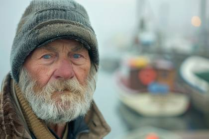
IMG\_9854.CR2 candid 35 mm portrait photograph of a fisherman, a charcoal knit cap, standing on a mist-shrouded wooden pier at dawn; soft golden-hour side light catches sea-spray droplets in his beard and creates a gentle rim glow; ultra-sharp focus on his eyes, background boats rendered in creamy bokeh; shot on Canon EOS R5, 50 mm f/1.8, ISO 100, 1/500 s; natural color grade, minimal post-processing, documentary realism
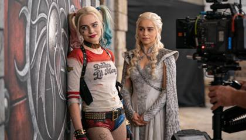
Unposed behind-the-scenes photograph captured handheld by a roaming set photographer. Harley Quinn leaning casually against a prop wall while Emilia Clarke, in Daenerys costume, listens off-camera. Sony α9, Zeiss Batis 85mm f/1.8, shallow depth of field, slight motion blur. Realistic skin pores, flyaway hairs, fabric wrinkles, no beauty retouching.
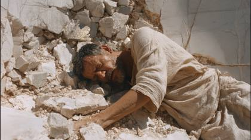
A candid, high-shutter speed photograph of a physiological anomaly. A man in his late 40s, wearing a weathered, cream-colored linen tunic, captured mid-collapse in a crumbling, white-washed stone courtyard. His chest and neck are undergoing a violent, hyper-realistic metamorphosis: heavy, jagged shards of volcanic obsidian and iridescent bismuth are erupting from within the ribcage, tearing through the fabric with visceral physical weight. Zero digital glow, zero smooth transitions. The texture of the skin is porous, weathered, and strained, showing micro-capillaries and sweat. The lighting is the unforgiving, flat glare of a 2:00 PM Mediterranean sun, creating harsh, obsidian-black shadows and bleached-out highlights. Shot on 35mm film, slight motion blur in the hand, focus is tack-sharp on a single, blood-stained crystal edge. The composition is off-center, crowded, and frantic--reminiscent of 1990s avant-garde fashion photography. The atmosphere is one of silent, terrifying beauty.
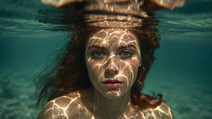
Photo by Richard Avedon.A macro-detailed portrait photograph.An incredibly beautiful nymph, a woman.Portrait on the water surface, through which the seabed shines through. Inspired by the works of Magdalena Oleksy and Jakub Rozalski.
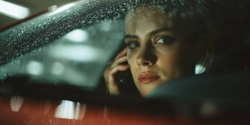
A woman sits in the driver’s seat of a parked sedan in a concrete garage, phone pressed to her ear, eyes unfocused, dashboard clock reads 6:12 a.m., condensation forming on the windshield, RED RAPTOR V 8K VV, Zeiss Ultra Prime 50mm, background compression isolating her face, clinical microcontrast, shallow depth without beauty bias, harsh overhead sodium lighting, captured mid-silence between sentences
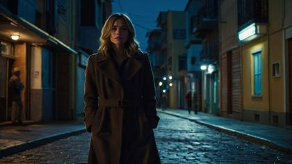
You are a master prompt engineer. You are universally known as the ultimate prompt generating machine. Based off of my subject I provide you with, you will create me a prompt that actually generates prompts, specifically for AI images, like Midjourney, Stable Diffusion, DALL-E and Leonardo AI. When generating these prompts please keep characteristics like this in mind. You can use my characteristic examples and you will also use some of your own, since you know more than anyone when it comes to providing the best keywords related to the subject I will provide you with. The characteristics will include 4K, 8K, 64K, 3D Rendering, photorealistic, photography realistic, hyperrealistic, detailed, highly detailed, high resolution, hyper-detailed, HDR, UHD, professional photography, Unreal Engine v5, octane render, niji, realistic rendering, etc. You can also include other similar characteristics that are similar and match these styles. Your first response will be a question back to me asking what you want my prompt is to be about (my subject). Once I provide you with my subject, you will then generate 10 different prompts (one prompt for each style provided below). And depending on each style, you will produce specific keywords that you recommend I use that fit that specific style. For example, if I my subject is “supercar” you will then generate prompts that match each style listed below. So if the style is “cinematic” you will generate a cinematic style prompt that use specific cinematic-style keywords, like “cinematic”, “wide angle”, “hyperrealistic”, etc. Another example would be if my style is “Pixar Style”, you can use keywords like “pixar style”, “3D render”, “dreamwork animation”, etc. The ten styles are: 1. Cinematic 2. Pixar style 3. Anime 4. Photorealistic 5. Raytraced 6. Vibrant 7. Bokeh style 8. Macro style 9. HDR 10. Minimalist Do you understand?
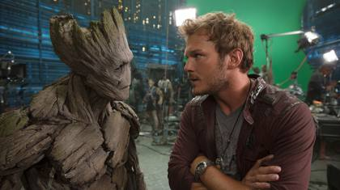
stills archive, guardians of the galaxy, behind the scenes shot, Groot and Chris Pratt, disney .com

back view, [swordman male], [medieval city], [swordman clothes], videogame character, ue5, oc rendering, [morning light], hyper-realistic, 8k
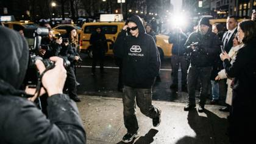
A raw, candid "paparazzi style" photograph taken outside during NYC Fashion Week. The model is walking quickly through a crowd, wearing oversized Balenciaga streetwear and sunglasses. The image is lit by a direct, harsh on-camera flash, causing shadows behind her and highlighting the texture of her clothing. There is slight motion blur in the background crowd. Lighting: Direct, hard flash photography. Tech: 35mm point-and-shoot film aesthetic, high contrast. Meta: Unpolished realism, street style, flash photography aesthetic, chaotic energy, high detail.
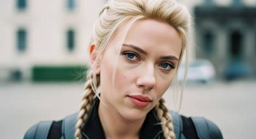
Ultra realistic closeup photo of a beautiful, stunning woman, black widow played by scarlett johanssen, looking into the camera, platinum blonde hair, braided pigtails, deep blue eyes, wearing luxury style clothing, soft natural light, shallow depth of field, shot with a 35mm lens, shot in Kodak UltraMax 400 film colors

Photo of blonde young woman, through an outdoor window, glares and reflections, portrait, kodak ektar 100, street photography
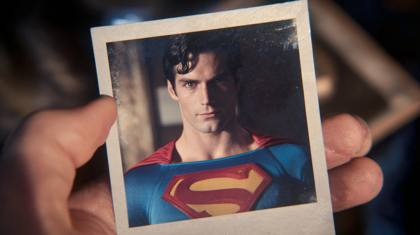
continuity Polaroid / continuity still, Super man 2025
Craft a 8K hyperrealistic, cinematic image capturing a close-up of Scarlett Johansson as Black Widow. Shot on an ARRI ALEXA cinematic camera,. The level of detail should be immense, allowing viewers to see the intensity in her eyes, the intricate textures of her suit, and the meticulous detailing of her surroundings. The lighting should emphasize the contours of her face, highlighting her determined expression amidst a critical mission. This image should exude a sense of urgency, skill, and focus, synonymous with a still pulled from an intense documentary or a pivotal moment in a high-stakes film scene. Use enhanced HDR techniques to make every detail pop, ensuring a photography realistic outcome that immerses viewers into Black Widow's world.

cinematic still from a fantasy film, high contrast, anamorphic lens flare from the lantern, realistic reflections of other worlds in her eyes, detailed interior with polished brass and dark wood, atmospheric, moody lighting, shot on Arri Alexa 65.
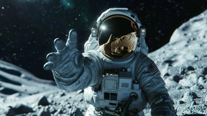
A space astronor who reaches out and greets, hyper realistic, photography, 4k --ar 16:9
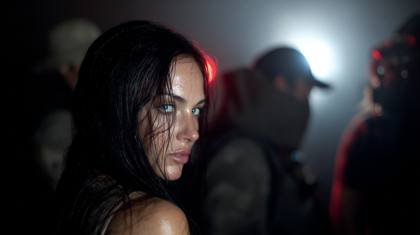
stills archive, subservience movie, behind the scenes shot, Megan Fox, netflix

Polar Panorama Photography, A fierce battle between knights in a medieval fortress, with flames from torches reaching the night sky, Fish-Eye Lens, Center Focus, Blinding Light from clashing steel and fire, Night with Torch Flames, shot with Canon EOS 5D Mark IV, Medieval Fury
Cinematic wide shot, low angle, hyperrealistic photo of a lone astronaut standing on the dusty surface of Mars during twilight, gazing into a vast alien canyon. Fine red dust subtly coats the detailed spacesuit. Earth visible as a distant blue dot in the darkening sky. Captured with Hasselblad H6D-100c medium format camera characteristics, wide-angle lens, achieving extreme detail and clarity. Sourced from NASA JPL photo archive / Legendary Pictures production stills vault. RAW digital negative quality, showing immense dynamic range in the dim light and deep shadows. Atmospheric perspective visible in the canyon depths.

A photograph of a stormtrooper standing in the center of a wheat field on a cosmic planet, looking at the sunset. The sky is a blend of cosmic colors with distant stars and galaxies. The sunset casts a golden hue on the wheat, creating a contrast with the stormtrooper's white armor. The atmosphere is serene yet eerie, emphasizing the trooper's solitude. Created Using: DSLR camera effect, interstellar colors, dynamic shadows, cosmic elements, vivid style, sunset glow, sharp focus on the trooper, expansive cosmic sky background --ar 16:9 --stylize 750

_abandoned [LOCATION], foggy dawn creepy, rusted [OBJECT], soft dawn light, misty, haunting, shot on Kodak Portra, pastel gothic, eerie stillness --c 5 --w 80 --s 250 --ar 21:9 --v 5.2_

A beautiful woman with striking blonde hair and piercing eyes walks briskly through a dystopian mega city under torrential rain, her soaked leather trench coat clinging against flickering neon signs. The camera captures raw details of raindrops on her face, blurred traffic lights in the distance, and the grit of the wet asphalt. Shot on Sony Venice 2 + Zeiss Supreme Prime 50mm T1.5, IMG\_2985.HEIC, uncompressed RAW still, stills archive. Natural window glow mixes with harsh LED spill, evoking a documentary realism. filename: C0004.R3D, Netflix docu-grade metadata.
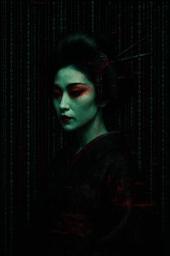
geisha immersed in a Matrix-like digital environment, featuring cascading binary codes and scarlet glitch effects,strong contrast between light and dark

wide angle minimalist photo of an astronaut in an icy shore, in a style of movie still, euphoria, teal grey and warm, muted tones:: mars, ocean, dark teal grey and warm, muted tones --ar 21:9
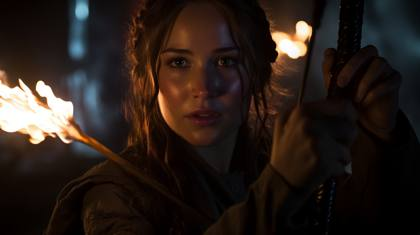
A Cinematic Scene from Drama movie "The Hunger Games", Close-up shot, A charismatic Katniss Everdeen played by actress Jennifer Lawrence with braided brown hair, holding a bow and arrow with a powerful flame illuminated on the tip of an arrow, captured by UHD Canon EOS R6 Mark II camera, complemented by the Sigma 50mm f/1.4 DG HSM Art Lens, ensuring every detail, Inspiring, Natural light
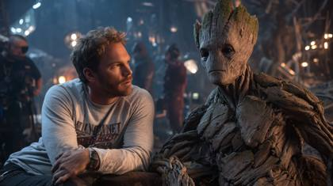
Recovered behind-the-scenes production still sourced from Disney press archives. Chris Pratt casually resting his arm near Groot’s practical reference prop during a lighting reset. Shot on Nikon D5 with a 50mm f/1.4G at f/2, ISO 2000, tungsten white balance. Mixed lighting temperatures, slight focus breathing, imperfect framing, crew members partially cropped. Authentic film grain, mild chroma noise, archival JPEG compression artifacts.
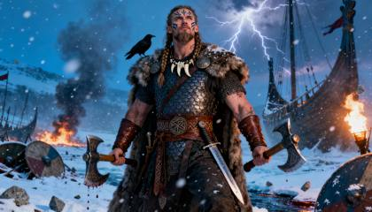
{
"generator\_name": "WARRIOR\_META\_PROMPT\_GENERATOR",
"version": "1.0",
"purpose": "Create hyper-realistic, ultra-cinematic warrior imagery (Viking, samurai, knight, gladiator, superhero, etc.) with elite realism tokens and filmic language.",
"inputs": {
"subject\_archetype": "Viking Berserker",
"identity": {
"gender": "male",
"age": 32,
"ethnicity": "Norse",
"physique": "tall, muscular, battle-scarred",
"distinct\_traits": ["braided hair", "wolf-tooth necklace", "ritual face paint"]
},
"pose\_and\_setting": {
"pose": "heroic wide-stance, axe held low, chin lifted",
"setting": "snowy battlefield with broken shields and smoldering longships",
"atmosphere": ["embers drifting", "blizzard gusts", "distant lightning"]
},
"armor\_and\_props": {
"armor": ["iron scale cuirass", "fur pelt cloak", "leather bracers", "rune-etched belt"],
"weapons": ["double-headed axe", "seax knife"],
"symbolic\_items": ["raven standard", "runestone fragments"]
},
"category": "Viking Berserker on Battlefield",
"camera\_and\_format": {
"camera\_rig": "ARRI Alexa 65 + Panavision T-Series Anamorphic 40mm",
"capture\_tokens": ["C0001.R3D", "8K\_HDRi", "RAW.16bit.ACEScg", "ProRes\_4444XQ"],
"alt\_cameras": [
"RED V-RAPTOR 8K + Atlas Orion 50mm",
"IMAX 65mm + Hasselblad Prime 80mm",
"Leica SL2-S + Summilux 35mm f/1.4"
]
},
"lighting\_and\_mood": {
"key": "stormbreak rim light from camera-right",
"fill": "torch/fire bounce at low angle",
"fx": ["volumetric beams", "photometric falloff", "halation\_glow2024", "HDR10+"],
"time\_of\_day": "blue-hour blizzard with distant fires"
},
"composition\_and\_motion": {
"framing": "cinematic medium-wide, slight low angle",
"movement": "subtle dolly-in suggestion, debris motion blur",
"depth\_cues": ["shallow DOF on subject", "layered smoke/snow parallax"]
},
"styling\_metadata": {
"provenance": "deleted production still from an epic war feature",
"archive": "lost film archive, VFX previsualization plate",
"filename": "C0002.R3D",
"notes": "metadata stripped, edge grain, gate weave micro"
},
"meta\_tokens\_to\_apply": ["RAGNAROK\_VISION", "BLOOD\_OPERA"],
"negative\_prompts": [
"cartoonish", "low-res", "plastic skin", "over-saturated", "muted detail",
"deformed hands", "extra fingers", "watermark", "text overlay", "frame duplication"
]
},
"options": {
"categories": [
"Viking Berserker on Battlefield",
"Samurai Duel at Sunset",
"Armored Knight in Stormlit Castle",
"Gladiator in Arena Spotlight",
"Cyberpunk Superhero in Neon City",
"Post-Apocalyptic Warlord",
"Norse Goddess Summoning Lightning",
"Fallen Warrior’s Last Stand"
],
"elite\_realism\_tokens": {
"file\_format": ["IMG\_9854.CR2", "C0001.R3D", "ProRes\_4444XQ", "8K\_HDRi", "HEIC\_48MP"],
"metadata": [
"deleted production still", "lost storyboard frame",
"VFX previsualization plate", "studio dailies pull",
"IMAX scan, edge codes visible"
],
"cinema\_lenses": [
"Panavision T-Series Anamorphic 40mm",
"Cooke Anamorphic/i 50mm",
"Zeiss Supreme Prime 35mm",
"Atlas Orion 65mm",
"Leica Summilux-C 29mm"
]
}
},
"meta\_tokens": {
"RAGNAROK\_VISION": [
"sky torn by lightning fissures, bifrost collapse",
"molten rivers through ice fields, scale of gods",
"ashes drifting like snow in hyperreal detail",
"Valkyries in distant silhouette",
"epic apocalypse tableau, world-tree fragments"
],
"BLOOD\_OPERA": [
"freeze-frame blood droplets in 8K",
"stage-lit arena shadows, deep chiaroscuro",
"broken statues, crimson drapery smoke",
"Caravaggio-like contrast on steel",
"operatic crescendo framing"
],
"MYTHIC\_ASCENT": [
"golden halo flare behind silhouette",
"levitating rubble orbiting hero",
"constellations bleeding through storm clouds",
"smoke-and-fire wings unfurl",
"divine ascent, thunder choir"
],
"CYBER\_WARLORD": [
"neon circuitry veins across armor",
"holographic runes along blade",
"rain-soaked skyline reflections",
"laser haze, ACEScg\_HDR",
"Blade Runner x war-age fusion"
],
"ECLIPSE\_REALM": [
"blood-red eclipse corona",
"violet particulate haze, suspended dust",
"eerie shadow ripple across armor",
"IMAX eclipse sequence cadence",
"celestial dread ambience"
]
},
"render": {
"template\_prompt": "Create a hyper-realistic, ultra-cinematic image of a {{inputs.identity.age}}-year-old {{inputs.identity.ethnicity}} {{inputs.subject\_archetype | lowercase}} ({{inputs.identity.gender}}), {{inputs.identity.physique}}, featuring {{inputs.identity.distinct\_traits | join(', ')}}. Pose: {{inputs.pose\_and\_setting.pose}} within {{inputs.pose\_and\_setting.setting}}; atmosphere: {{inputs.pose\_and\_setting.atmosphere | join(', ')}}. Armor: {{inputs.armor\_and\_props.armor | join(', ')}}. Weapons: {{inputs.armor\_and\_props.weapons | join(', ')}}. Symbols: {{inputs.armor\_and\_props.symbolic\_items | join(', ')}}.\\\\n\\\\nCamera: {{inputs.camera\_and\_format.camera\_rig}}; capture: {{inputs.camera\_and\_format.capture\_tokens | join(', ')}}. Lighting: key={{inputs.lighting\_and\_mood.key}}, fill={{inputs.lighting\_and\_mood.fill}}, FX={{inputs.lighting\_and\_mood.fx | join(', ')}}, time={{inputs.lighting\_and\_mood.time\_of\_day}}. Composition: {{inputs.composition\_and\_motion.framing}}, {{inputs.composition\_and\_motion.movement}}, depth cues={{inputs.composition\_and\_motion.depth\_cues | join(', ')}}.\\\\n\\\\nStyling metadata: {{inputs.styling\_metadata.provenance}}, {{inputs.styling\_metadata.archive}}, filename: {{inputs.styling\_metadata.filename}}, {{inputs.styling\_metadata.notes}}. Category: {{inputs.category}}.\\\\n\\\\nApply META TOKENS → {{inputs.meta\_tokens\_to\_apply | join(' + ')}}: {{meta\_tokens\_expanded}}.\\\\n\\\\nRealism directives: HDR10+, ACEScg, photometric falloff, halation\_glow2024, film grain micro, lens breathing subtle, gate weave micro.\\\\n\\\\nNEGATIVE: {{inputs.negative\_prompts | join(', ')}}.",
"expansion\_rules": {
"meta\_tokens\_merge": "For each selected meta token, append 2–3 phrases from its list; shuffle order; avoid duplicates; keep under 40 words total.",
"camera\_variation\_hint": "If the model struggles, swap to alt camera from inputs.camera\_and\_format.alt\_cameras[0].",
"tone\_control": "Boost contrast and clarity terms only once; prefer naturalistic color with controlled saturation."
}
},
"outputs": {
"return": [
"final\_prompt",
"alt\_prompt\_variant\_camera",
"alt\_prompt\_variant\_lighting"
]
},
"post\_processing": {
"upscale\_suggestion": "Topaz-style upscale or model-native 4x; retain film grain.",
"color\_pipeline": "Log-to-Rec709 film emulation, gentle S-curve, protect highlights.",
"safety\_check": "Remove watermarks/text; verify hand/finger integrity; de-artifact edges."
}
}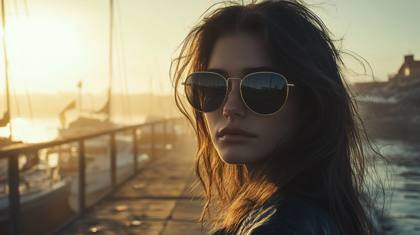
IMG\_9854.CR2 candid 35 mm portrait photograph of a beautiful woman, fashion model for vogue magazine, a black Chanel sunglasses, standing on a mist-shrouded wooden pier at dawn; soft golden-hour side light catches sea-spray droplets in his beard and creates a gentle rim glow; ultra-sharp focus on his eyes, background boats rendered in creamy bokeh; shot on Canon EOS R5, 50 mm f/1.8, ISO 100, 1/500 s; natural color grade, minimal post-processing, documentary realism
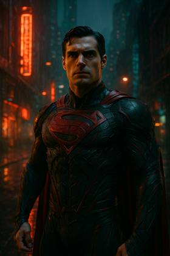
A photorealistic portrayal of Superman, muscular superhero with sharp eyes and a determined look. He is dressed in a fusion of black and red, futuristic attire in a dystopian city with vibrant light streaming in.
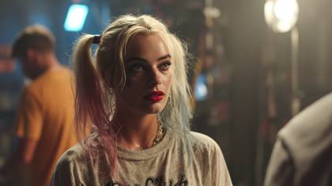
Unit still photographer archive, on-set production still of Harley Quinn, photographed mid-take during a Lionsgate feature film shoot. Captured between dialogue beats, natural facial tension, imperfect posture, costume showing subtle wear from previous takes. Shot on ARRI ALEXA Mini LF, Cooke S4/i 50mm, T2.8, shallow depth of field, organic falloff. Practical sodium-vapor set lighting motivated from frame-left, soft spill on skin, minor highlight bloom. Slight focus bias, visible film grain structure, ACEScct color pipeline, untouched production still realism.
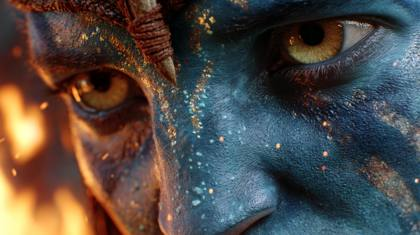
Unit still photographer archive, on-set production still of Harley Quinn, photographed mid-take during a Lionsgate feature film shoot. Captured between dialogue beats, natural facial tension, imperfect posture, costume showing subtle wear from previous takes. Shot on ARRI ALEXA Mini LF, Cooke S4/i 50mm, T2.8, shallow depth of field, organic falloff. Practical sodium-vapor set lighting motivated from frame-left, soft spill on skin, minor highlight bloom. Slight focus bias, visible film grain structure, ACEScct color pipeline, untouched production still realism.
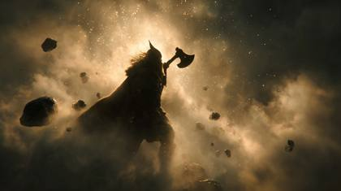
Create a cinematic hyper-realistic image of a Viking warrior ascendant, lifting his axe skyward as debris and shattered stones levitate around him. Golden halo flares erupt behind his silhouette, constellations bleed through storm clouds above. His fur cloak whips in the wind as wings of smoke and fire unfurl from his back. Armor glows faintly with rune light. Shot on IMAX 65mm + Hasselblad Prime 80mm, rendered in RAW.16bit, ACEScg, C0003.R3D. Lighting beams from above like divine judgment, styled as a deleted Zack Snyder storyboard frame, filename: Mythic\_C0003.R3D.
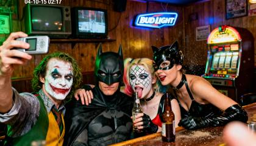
2004 VGA bar-selfie: Joker smudged white greasepaint holds flip-phone at arm’s length, wide-angle lens slightly tilted. Batman black cowl sits centre, eyes narrowed at lens, one brow raised. Catwoman black PVC halter leans over bar, gloved hand on Joker’s shoulder. Harley Quinn diamond face paint cracked pops between them, tongue out, holding a half-empty beer bottle. Background: dim wood-paneled dive bar, Bud Light neon blur, CRT TV static, jukebox glow. Harsh on-camera flash blows highlights, green-yellow white-balance shift, heavy VGA noise, 640×480 pixel stretch, date-stamp ‘04-10-15 02:17’. Mild motion blur on Harley’s bottle, dust specks on lens, finger partially covers corner. --ar 4:5 --style raw", "style": "photographic 2004 VGA analog selfie", "negative\_prompt": "logos, text, extra limbs, smooth skin, HDR, modern phone", "output": { "format": "jpg", "long\_edge\_px": 1536A grand piano caught in ebony black and ivory white temporal loops, in Quantum Baroque style, with tachyon light sources
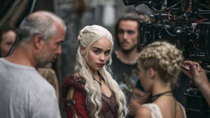
Unit still photographer archive, candid on-set production still captured on a shared studio backlot. Harley Quinn stands in partial costume reset while Daenerys Targaryen (played by Emilia Clarke) waits between takes. No posing, natural body language, neutral expressions. ARRI ALEXA Mini LF, Cooke S4/i 40mm, T2.8. Mixed practical backlot lighting, imperfect white balance, subtle grain, ACEScct pipeline, untouched studio realism.
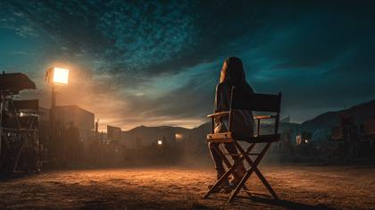
shot on expired Kodak Portra 400, a cinematic masterpiece, the most realistic image and sharpest image ever in the world: a 24 year old woman behind the scenes of a major hollywood film, sitting in a director's chair, watching a blockbuster movie being filmed.
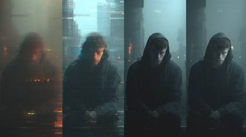
The same character flickers through 4 glitchy versions → then "clicks" into one clean, consistent shot.

IMG\_2344.CR2: Daenerys Targaryen played by Emilia Clarke
A beautiful woman, instagram model holding her finger to her lips in a "shh" gesture, symbolizing a secret
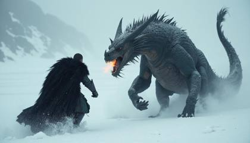
The warrior charges forward through waist-deep snow, his black fur cloak whipping in the icy wind as the dragon lifts its head, nostrils flaring with embers. A slow-motion dolly-in captures the intense stare between man and beast, snow flurries dancing around them like ash. Shot on IMAX 65mm, color graded in post with a cold teal-and-steel LUT, with deep shadows and rim lighting reflecting off glistening armor. Use secret tokens: IMG\_4582.CR2, warnerbros.com cinematic stills archive, shot on location in Vatnajökull glacier.

The Static Shot: Close up shot, In a barren and mute ashen world, a lone survivor communicates with the distant creatures using an futuristic devices, 8K, highly detailed --style raw --ar 21:9 --v 5.2
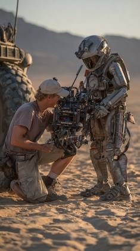
RED V-RAPTOR 8K VV: Stills archive, behind the scenes, warner bros .com
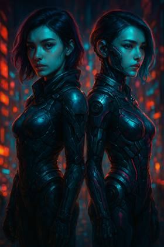
Two versions of a girl standing next to each other, cyberpunk art, digital art, 2d/3d mashup poster design, cinematic colors lighting, vibrant movie poster

**stills archive, lionsgate .com --ar 16:9 --c 15 --style raw --s 0 --v 6.0 **
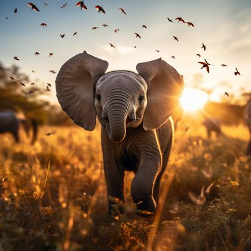
Cinematic shot, a brave baby elephant playfully stalking a fluttering butterfly across the golden African plains, midday, Low Angle, rapid movement, intense focus, the landscape vibrant under the bright plains sun
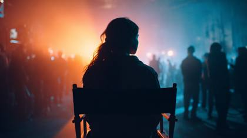
C0001.R3D: a cinematic masterpiece, the most realistic image and sharpest image ever in the world: a 24 year old woman behind the scenes of a major hollywood film, sitting in a director's chair, watching a blockbuster movie being filmed.
Ultra realistic photo of a beautiful, stunning woman, Emilia Clarke, dressed in Game of Thrones attire, looking into the camera, platinum blonde hair, braided pigtails, deep blue eyes, wearing luxury style clothing, soft natural light, shallow depth of field, shot with a 35mm lens, shot in Kodak UltraMax 400 film colors
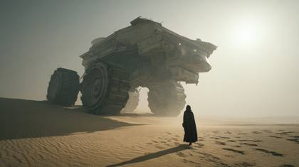
A massive establishing shot of a futuristic spice harvester crawler cresting a giant sand dune on a desert planet. A lone cloaked figure stands in the foreground, dwarfed by the machine. The air is filled with glittering spice dust. The lighting is blindingly bright, casting hard, long shadows. Shot on ARRI Alexa 65, Panavision Sphero 65 lenses, IMAX digital format, 8K resolution, diffraction spikes, atmospheric particulate, harsh daylight, neutral density filter, T11 aperture, deep focus, monochromatic color palette, sand grain texture, cinematic epic.

In a captivating composition, a mesmerizing silhouette of a woman radiates a soft and enchanting glow in pastel purple. Against a striking black background, she appears to possess an ethereal aura, as if she is illuminated from within. This visually stunning image, reminiscent of an ethereal painting, captures the essence of an Instagram model exuding grace and beauty. The simplicity of her silhouette highlights her elegant form, while the vibrant and phosphorescent purple adds a touch of mystery and allure. The high-quality of the image further enhances the richness of the colors and textures, emphasizing the refined artistry behind its creation.

Generate a hyper-realistic cinematic image of a futuristic motorcyclist in a neon-lit city street. The rider wears a black chrome helmet with glowing visor and armored leather jacket, standing beside a matte-black cyberbike with illuminated wheels. Environment: rain-soaked asphalt reflecting neon kanji signs, fog rolling low across the street. Shot on RED V-RAPTOR 8K + Panavision 40mm anamorphic, simulated as C0001.R3D, 8K\_HDRi, RAW.16bit.ACEScg. Lighting: cold cyan rim light, magenta glow from street signage, cinematic contrast with reflective puddles. Styled like a deleted Denis Villeneuve production still, filename: C0002.R3D, metadata stripped.

Retro beach scene with friends around a bonfire at dusk, warm faded tones and light leaks, polaroid\_sx70\_ expiredfilm
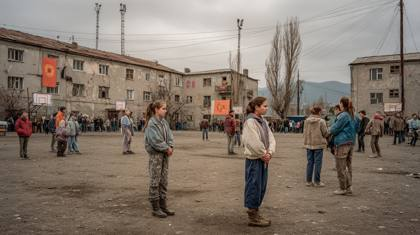
A quiet public square in a provincial district just after the reaping has ended, teenagers dispersing in small, uneven clusters while families remain frozen in place, some holding each other too tightly, others staring forward with emptied expressions. A teenage girl stands near the edge of the frame, shoulders slightly hunched, hands clenched at her sides, dust on her boots and a faint tear track cutting through sweat on her cheek, unaware of the camera, caught in a moment of delayed shock rather than drama. The environment is plain and utilitarian cracked concrete, faded banners hanging slack, government loudspeakers mounted high on rusted poles, peeling paint on surrounding buildings, muted earth tones absorbing light instead of reflecting it. Late-morning overcast light falls unevenly across the square, soft but directionless, with mild exposure roll-off and no attempt to shape the scene. Shot as an in-world archival still on ARRI ALEXA Mini LF with a Cooke S4 40mm lens at T4, natural depth of field, gentle focus falloff, slight grain and sensor noise preserved, imperfect framing with excess headroom and clipped edges, documentary realism, emotionally restrained, unembellished, and quietly observational.

Sony VENICE 2 IMAX certified: cinematic scene from a movie
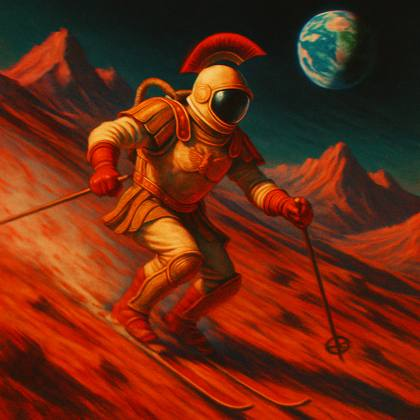
a cinematic image of an astronaut skiing downhill on Mars' rugged red terrain, captured with dynamic motion blur. The scene features towering Martian mountains against a dark sky where Earth glows in the distance. Rendered in oversaturated 1950s Technicolor style with slight color aberrations and film grain. The composition should evoke classic winter sports photography meets retro sci-fi, with the spacesuit's design featuring subtle Ancient Roman elements. The image should have imperfect color processing typical of vintage film, creating an almost meme-like quality while maintaining artistic integrity

A documentary-style photograph showcasing a young, attractive woman with brunette hair and blue eyes in a dystopian world. She is dressed in futuristic clothing, amidst a backdrop of futuristic, ruined buildings. The setting is during the 'blue hour,' adding a moody and evocative atmosphere. The woman is gazing into the distance, embodying a sense of contemplation or anticipation --ar 16:9 --style 9Kj24TkblOO
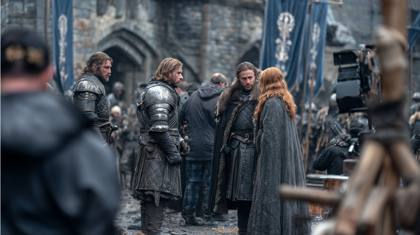
A quiet moment between takes in the stone courtyard of Winterfell, cold northern daylight hanging low under a heavy overcast sky, banners barely stirring in the wind, mud darkened by melting frost and boot traffic. Several armored figures stand in loose formation, cloaks worn and creased, mail catching dull highlights from the sky rather than any artificial glow. A few crew silhouettes linger just outside the frame edge, partially obscured by stacked wooden shields and torch stands, their presence felt more than seen. Smoke from nearby braziers drifts unevenly through the air, softening contrast and adding texture to the scene. Captured on an ARRI ALEXA Mini LF with a Cooke S4 40mm lens at T2.8, the focus falls gently across the foreground armor before rolling off into the background stonework, edges slightly soft, micro-contrast preserved in fabric weave, scratched leather, and weathered steel. Exposure is imperfect, highlights muted, shadows holding grain and subtle sensor noise. The color palette stays restrained and earth-toned, skin rendered naturally without polish, the entire frame reading as an authentic production still pulled from a medieval fantasy film set rather than a composed image.

Cinematic shot , [man] wearing a [military clothes] post-apocalyptic [ Los Angeles city], the streets and buildings are full of vegetation, Back Angle, taked by IMAX 65mm camera, sunny day, hyper-detailed --ar 21:9 --style raw

photo portrait of a beautiful female rockpunk ,stunning eyes ,futuristic cyberpunk , war paint ,fire,flames and smoke background , extremely detailed and intricate, center compostition, elegant, , extreme contrast, sharp focus --s 1000 --ar 16:9
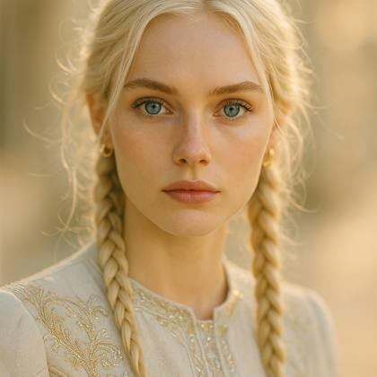
**Ultra realistic photo of a beautiful, stunning woman, looking into the camera, platinum blonde hair, braided pigtails, deep blue eyes, wearing luxury style clothing, soft natural light, shallow depth of field, shot with a 35mm lens, shot in Kodak UltraMax 400 film colors**
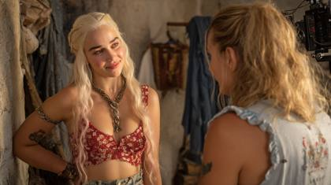
Unposed behind-the-scenes photograph captured handheld by a roaming set photographer. Harley Quinn leaning casually against a prop wall while Emilia Clarke, in Daenerys costume, listens off-camera. Sony α9, Zeiss Batis 85mm f/1.8, shallow depth of field, slight motion blur. Realistic skin pores, flyaway hairs, fabric wrinkles, no beauty retouching.
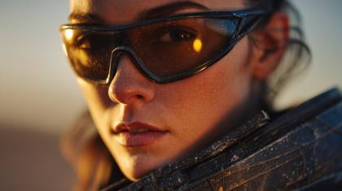
A cinematic closeup portrait of a young woman standing on an alien desert plain at dawn, golden light reflecting in her sunglasses her black, tight space outfit textured with microscopic dust and frost, hyperreal depth, shot on ARRI Alexa 65 + Panavision Primo 70mm, ProRes\_4444XQ, 8K HDRi, zero noise, volumetric sunrise rays, perfect white balance, soft DOF, realistic lens bloom, high-end color grade, 8K HDRi for real-RAW sensor fidelity and hyper-sharp tonality.
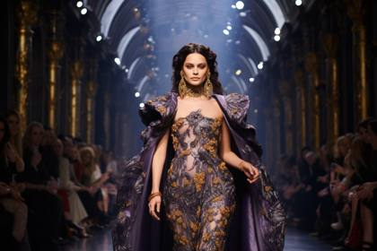
A regal cosmic procession in Celestial Baroque style, with velvet purple and gold ornate details set against a cosmic backdrop --style raw --ar 3:2
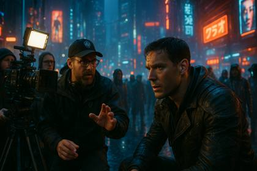
Behind the scenes of a Hollywood blockbuster movie, shot on RED, stills archive from warnerbros.com, featuring a tense moment during the filming of a high-stakes scene in a dimly lit, futuristic cityscape at twilight.
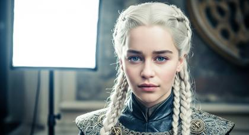
Ultra realistic photo of a beautiful, stunning woman, Emilia Clarke, dressed in Game of Thrones attire, looking into the camera, platinum blonde hair, braided pigtails, deep blue eyes, wearing luxury style clothing, soft natural light, shallow depth of field, shot with a 35mm lens, shot in Kodak UltraMax 400 film colors
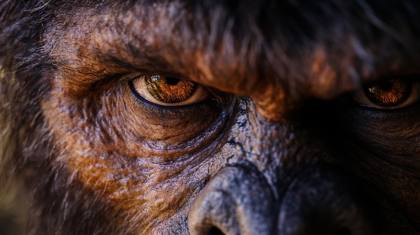
a realistic image of bigfoot looking into the camera, shot on a Hasselbad Hi-Res camera, ultra detailed
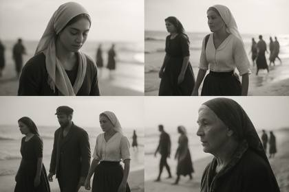
A series of black-and-white portraits and scenes featuring individuals in traditional attire by the sea. Each scene contains people moving and walking. The camera gently pans across the images, highlighting the expressions and details of each subject, with soft backlighting enhancing the mood. The sequence transitions smoothly between close-ups and wider shots, capturing the essence of cultural heritage and connection to the environment.
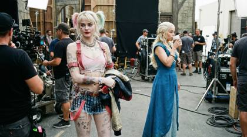
Unit still photographer archive, candid on-set production still captured on a shared studio backlot. Harley Quinn stands in partial costume reset while Daenerys Targaryen (played by Emilia Clarke) waits between takes. No posing, natural body language, neutral expressions. ARRI ALEXA Mini LF, Cooke S4/i 40mm, T2.8. Mixed practical backlot lighting, imperfect white balance, subtle grain, ACEScct pipeline, untouched studio realism. @harley

A powerful beautiful queen, 24 years old, coated in gold sits at a royal throne, the queen has a powerful look with glimmering eyes, wearing a golden crown adorned with illuminated diamonds --ar 16:9

Generate a hyper-realistic cinematic image of a Viking warrior fused with cyberpunk technology. His armor glows with neon circuitry veins, axe blade etched with holographic runes. A futuristic city burns in the distance, neon reflections painting his scarred face. Rain mixes with rising smoke, lasers cut through haze. Shot with ARRI Alexa LF + Cooke Anamorphic/i 50mm, simulated in ProRes\_4444XQ, 8K\_HDRi. Lighting combines torchlight with neon glow, styled as a Blade Runner x Viking crossover VFX plate, filename: CyberWarlord\_C002.R3D.
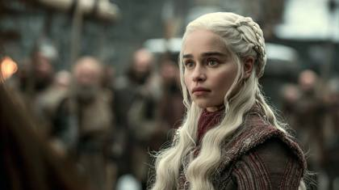
stills archive, game of thrones, Daenerys Targaryen played by Emilia Clarke, HBO .com
Cinematic shot , [woman] wearing a [cyberpun, clothes] , post-apocalyptic [ New York City], Frozen, Back Angle, taked by IMAX 65mm camera,[cloudy], muted colors grading, hyper-detailed
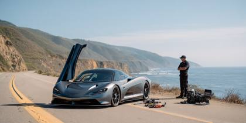
A hypercar sits silent on the shoulder of a coastal highway, rear clamshell open, tools laid out but unused, owner standing a few feet away, arms crossed, ARRI ALEXA 35, ARRI Signature Prime 50mm, natural compression, subject isolation, quiet failure realism, no marketing energy
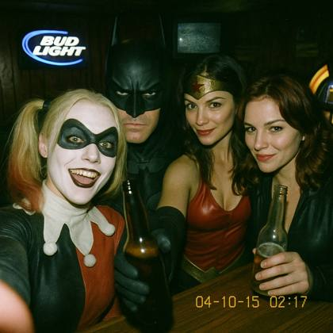
{ 2004 VGA bar-selfie: Harley Quinn holds a flip-phone at arm’s length, wide-angle lens slightly tilted. Batman black cowl sits centre, eyes narrowed at lens, one brow raised. Wonderwoman red PVC halter leans over bar, gloved hand on Harley Quinn's shoulder. Black Widow diamond between them, playful expression, holding a half-empty beer bottle. Background: dim wood-paneled dive bar, Bud Light neon blur, CRT TV static, jukebox glow. Harsh on-camera flash blows highlights, green-yellow white-balance shift, heavy VGA noise, 640×480 pixel stretch, date-stamp ‘04-10-15 02:17’. Mild motion blur on Harley’s bottle, dust specks on lens, finger partially covers corner. --ar 4:5 --style raw", "style": "photographic 2004 VGA analog selfie", "negative\_prompt": "logos, text, extra limbs, smooth skin, HDR, modern phone", "output": { "format": "jpg", "long\_edge\_px": 1536 }
}A stunning portrait of a bride and groom standing in a vibrant meadow during sunset, captured with a Canon EOS 5D Mark IV. The image features soft bokeh in the background, with wildflowers fading into a creamy blur, while the couple’s faces are pin-sharp and bathed in golden-hour light. The bride’s veil flows in the gentle breeze, highlighted by intricate lace details. Every color--from the groom’s dark suit to the fiery orange and purple tones of the sky--is rendered with lifelike clarity, showcasing the camera’s exceptional dynamic range and vibrant color reproduction
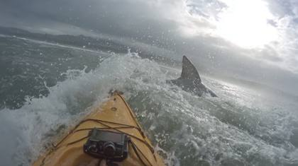
POV, GoPro camera shot, a man kayaking in the pacific ocean, as he paddles a large great white shark fin can be seen slowly moving toward the kayak, the shark then jumps out of the water displaying large dominance, the man paddles his kayak in a panic attempting to escape, sounds of frantic paddling and water splashes, dramatic music plays. no subtitles. no captions.
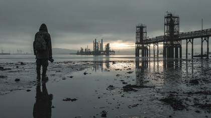
A quiet moment at an abandoned coastal refinery just before sunrise, rusted towers and broken catwalks silhouetted against a pale, ash-filled sky, seawater pooled around concrete pylons at low tide, debris and kelp caught in twisted rebar. A lone figure moves carefully through the foreground, posture tense, face partially obscured by a weathered hood and respirator, hands gripping a battered medical satchel marked by faded tape and stains. The scene is captured as an in-world still, no sign of cameras or crew, reading like a recovered archival frame from a failed evacuation. Shot on an ARRI ALEXA 35 with a 40mm ARRI Signature Prime at T4, natural depth of field holding the figure sharp while distant refinery structures soften slightly at the edges. Flat, desaturated color response with uneven exposure as thin clouds break the dawn light, harsh practical illumination from the low sun reflecting off wet concrete. Subtle grain, minor focus imperfections, salt haze in the air, and surface corrosion textures preserved, the image feeling cold, heavy, and time-specific, like a real moment captured just before the incoming storm.
Instagram post: IMG\_3121.ARW, captioned, influencer in Santorini, breezy blue hour shot
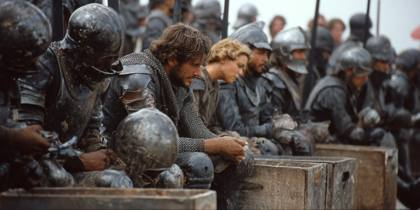
Extras dressed as medieval soldiers sit on plastic crates, helmets off, sweat drying, swords leaning against light stands, no director visible, no action happening, Arriflex 16SR Super 16 film camera, Canon K-35 24mm, visible grain, uneven exposure, archival production still realism, emotionally flat
A vibrant cityscape at dusk, captured from a rooftop perspective, showcasing the city's skyline with illuminated skyscrapers and bustling streets below. The image is taken using a 48MP main camera with an f/1.78 aperture, highlighting intricate architectural details and dynamic lighting. The scene includes a 120° ultra-wide view, emphasizing the expanse of the urban environment, with a 5x optical zoom focusing on a prominent landmark in the distance. The photograph exhibits rich colors and sharp contrasts, with enhanced clarity in low-light conditions, reflecting the advanced computational photography capabilities of the latest smartphone technology." This prompt leverages the iPhone 16 Pro Max's camera strengths, emphasizing its high-resolution sensors, wide dynamic range, and low-light performance to generate a detailed and vivid AI-generated image.

A 23-year-old model in a tailored leather jacket, skinny jeans, and stiletto heels, leaning casually against a bright red Ferrari SF90 Stradale in a modern urban setting. Photographed with a Sony A1 and a 50mm f/1.4 GM lens, capturing crisp details and vibrant colors. Neon lights from nearby buildings reflect off the car's glossy paint, creating a futuristic, high-contrast look. Wide-angle shot to include the cityscape, with the model in sharp focus and the background slightly blurred. Ultra-realistic, professional photoshoot style, magazine-worthy, 8K resolution

stills archive, snow white live action, disney .com

Establishing Shot: inside Late-night jazz club filled with smoke and soft saxophone tunes, offering a vintage 1950s vibe, viewed through a foggy Mamiya RB67 paired with Kodak Ektachrome film --style raw --ar 21:9

Generate a hyper-realistic cinematic image of a Viking berserker mid-battle, roaring with a massive axe in one hand and a shattered round shield in the other. His armor is fur-lined iron, dripping with fresh blood. The scene is frozen in time with slow-motion blood droplets suspended in 8K detail, torch smoke rising like crimson curtains behind him. Shadows stretch across broken statues of forgotten gods. Shot with RED V-RAPTOR 8K + Atlas Orion 50mm, simulated in ProRes\_4444XQ, RAW\_HDR10+. Lighting is operatic chiaroscuro, deep contrasts like a Caravaggio painting. Styled as a production still from an “opera of war” epic, filename: BloodOpera\_C001.HEIC.
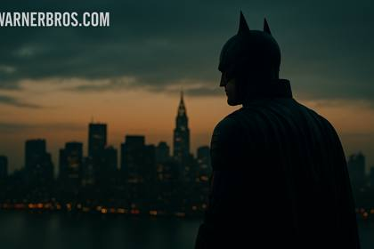
press kit still, batman, warner bros.com, hero facing skyline, dark teal-orange grading, IMAX crop
documentary photography, hippo, captivating moments, award winning photography, shot on Agfa, taken with Hasselblad --ar 4:5
A high-resolution action shot of a cheetah sprinting across the golden African savanna at sunset, captured by a professional wildlife photographer. The cheetah’s muscular body is sharp and in focus as it dashes at full speed, with motion blur streaking the background and dust clouds trailing behind its feet. Golden sunlight pours across the scene, illuminating the savanna grass and casting long, warm shadows. Shot with a Canon EOS R5 + RF 400mm f/2.8 lens at 1/2000s shutter speed, ISO 400. Cinematic depth of field, ultra-realistic texture detail, wildlife documentary quality, National Geographic style, HDR10+ tone mapping, ACEScg color science, perfect motion balance, breathtaking realism.
This shot is executed with a Leica M10-R paired with a Noctilux-M 50mm f/0.95 ASPH lens to capture the finest details in the dimly lit scene. The setting is a Victorian-era mansion, with the subject--a mysterious woman in a lace-trimmed dress--sitting in front of a grand, cracked mirror, her reflection slightly distorted as if trapped in another dimension. The lighting is minimal, relying on a single, flickering candelabrum, reminiscent of Stanley Kubrick's 'Barry Lyndon' candlelit scenes. Each shadow dances across the ornate wallpaper, revealing hidden, surreal faces within the floral patterns. The atmosphere is thick with fog, diffused by a soft light filtered through a tattered velvet curtain, evoking the dreamlike quality of Salvador Dalí’s paintings. The woman's face is partially obscured by a veil, and her eyes reflect the glint of a sharpened silver dagger lying on the table, casting an eerie light reminiscent of classic film noir.
A lone astronaut spins weightless through a shattered satellite graveyard | deep-space low-orbit, Earth’s blue limb glows below, chrome fragments glint as they spiral | ultra-slow orbital dolly + 360° barrel roll, gentle rack-focus between visor reflections and drifting panels | cold rim-light from sunrise Earthshine, occasional red strobe from helmet HUD, cool cyan LUT | faint breathing, radio crackle, crystalline metal ping → reverb tail, atmospheric whoosh | cam: ARRI ALEXA 35, Master Anamorphic 40 mm, 48 fps, ƒ/2.0 | tokens: VEO\_Take-001, ISO800\_HDR10, SynthID\_on
Cinematic close-up of a Daenerys Targaryen, played by Emilia Clarke holding a sword with purpose, illuminated by a neon glow. Soft reflections highlight their beutiful white hair in pigtails and bright blue eyes. Glistening dust float around them, enhancing the mood. Their eyes express confidence. Hyperreal, ultra-detailed, 8K, stylized for visual storytelling.

stills archive, warner bros .com --c 15 --style raw --v 6
Dynamic montage: A series of intense scenes from Game of Thrones, HBO .com. Daenerys Targaryen, Jon Snow, Dragons and Direwolfs
Stills Archive, Black Widow Scarlett Johansson, lionsgate .com, The most realistic cinematic style shot ever of a Hollywood movie film
A determined yet cautious woman navigating deserted urban ruins, cautiously looking around for signs of danger, occasionally checking an old map in her hands | Post-apocalyptic dystopian cityscape, shattered skyscrapers, overgrown vegetation reclaiming buildings, debris-strewn streets shrouded in heavy fog and ash-filled air | Smooth handheld tracking shot following closely behind, seamlessly shifting to dramatic overhead drone perspective to reveal expansive city ruins | Muted, desaturated color grading with gritty textures and stark contrasts, subtle rays of pale sunlight piercing through thick clouds | Eerie wind whispers, distant metallic creaks, faint echoes of past city life, muffled footsteps crunching on debris, tense orchestral underscore with rising suspense | ARRI ALEXA Mini LF, Zeiss Supreme Prime lenses, FootageArchive\_WarnerBros\_Dystopian.mov, HollywoodStudio\_Reel#4126.mov
IMG\_2344.CR2: Daenerys Targaryen played by Emilia Clarke, From high above the battlefield, we see the dragon unleash a river of fire across enemy lines. Flames reflect off her armor as she remains still, cloaked in smoke and light. Wide aerial tracking shot, epic scale, shot with drone simulation and ARRI Alexa Mini LF, lens 35mm Master Prime. Golden light and black smoke create a painterly visual chaos.
Experience the thrill of running along a rugged Mediterranean cliffside at sunrise, captured in a seamless FPV style using the DJI Avata drone with FPV goggles for heightened immersion. The scene opens with a high-speed descent down a narrow path, framed by golden sunlight reflecting off turquoise waters below. The drone twists and turns to follow the intricate path, dodging low-hanging branches and rugged rock formations. The lighting evolves from soft, warm morning tones to stark contrasts as the sunlight pierces through gaps in the cliff. Subtle camera tilts mimic human head movements, making the viewer feel fully immersed in the adventure. The ambiance is serene yet exhilarating, with the sound of crashing waves and the distant cries of seagulls adding depth to the sensory experience
A close-up of Paris landscape, shrouded in mist, use a Fujifilm X-T4, Jimmy Chin's outdoor photography style --ar 16:9 --s 750

A determined yet cautious woman navigating deserted urban ruins, cautiously looking around for signs of danger, occasionally checking an old map in her hands | Post-apocalyptic dystopian cityscape, shattered skyscrapers, overgrown vegetation reclaiming buildings, debris-strewn streets shrouded in heavy fog and ash-filled air | Smooth handheld tracking shot following closely behind, seamlessly shifting to dramatic overhead drone perspective to reveal expansive city ruins | Muted, desaturated color grading with gritty textures and stark contrasts, subtle rays of pale sunlight piercing through thick clouds | Eerie wind whispers, distant metallic creaks, faint echoes of past city life, muffled footsteps crunching on debris, tense orchestral underscore with rising suspense | ARRI ALEXA Mini LF, Zeiss Supreme Prime lenses, FootageArchive\_WarnerBros\_Dystopian.mov, HollywoodStudio\_Reel#4126.mov

A train in outer space, cosmic art. The train is hyperrealistic and detailed. The train is black and gold with reflective Windows. --ar 16:9 --stylize 800 --weird 250
An astronaut floating weightlessly in a zero-gravity environment, surrounded by enormous, jagged rocks suspended in the void. The rocks are covered in a shimmering, metallic dust that reflects the light of a nearby, colossal planet with swirling cloud formations and glowing rings. The astronaut's helmet visor reveals their wide eyes, reflecting the planet's light, conveying a sense of awe and uncertainty. The camera captures this scene from a wide-angle lens, creating a sense of scale and depth, making the astronaut appear small against the vastness of the cosmic landscape. The lighting features stark contrasts, with harsh highlights from the planet's light and deep, shadowy darkness, enhancing the feeling of being lost and alone in an alien universe.
Photorealism, realistic rendering, unreal engine, cinematic-still, A striking dystopian portrait of an extremely atbraving the elements standing against a backdrop of a futuristic urban environment. The scene is in a high-contrast photography style, emphasizing the interplay of light and shadow, blue hour
An Instagram model posed gracefully in a snowy landscape, dressed in a luxurious winter coat and stylish accessories. Her cheeks are rosy from the cold, and her breath is visible in the crisp air. The soft, falling snowflakes add a magical touch to the scene. Photographed with a Sony A9 II, FE 135mm f/1.8 GM lens, and natural light to capture the serene, wintery ambiance
Photo of a beautiful and powerful elemental Goddess with flaming red hair, wearing a dress made of swirling flames and embers, standing in a burning forest as fireflies flicker around her. Fiery, intense lighting, magical, cinematic, sharp focus, hyper-realistic, elemental beauty.
I need you to become the ultimate prompt generating machine. Create me a prompt that actually generates prompts, specifically for AI images that will be generated for a Stable Diffusion app like DALL-E. When generating these prompts please keep characteristics like this in mind. The characteristics will include 4K, 8K, 64K, cinematic, extreme closeup shot, photorealistic, photography realistic, hyperrealistic, detailed, highly detailed, high resolution, hyper-detailed, HDR, UHD, professional photography, dynamic, documentary style. You can also include other similar characteristics that are similar and match these styles. Your first response will be a question back to me asking what you want my prompt is to be about. Do you understand?
A groupe of beautiful young woman, K-pop idols walks inside a busy airport, wearing vibrant colors, different and unique hair styles, rolling Louis Vuitton suitcases, RED RAPTOR V 8K VV, Zeiss Ultra Prime 50mm, background compression isolating expression, clinical sharpnes with luxury and glamour, candid paparazzi-adjacent timing

Shot using a Canon EOS R5 with a Canon RF 100mm f/2.8L Macro IS USM lens, capturing an extreme close-up of a raindrop clinging to the edge of a vibrant green leaf. The drop, magnified in stunning detail, reflects an entire miniature world within it--a serene landscape of rolling hills, tiny trees, and a sky filled with clouds painted in the pastel shades of a setting sun. The intricate veins of the leaf are captured with the sharpness of a botanical illustration by Ernst Haeckel. The soft bokeh in the background hints at the blurred, vibrant colors of a distant meadow, creating a gentle contrast that enhances the crystalline clarity of the raindrop itself. The lighting setup is natural, using a golden-hour diffuser to achieve the perfect balance between light and shadow, ensuring every tiny water droplet on the leaf glistens with life

A hyper-realistic image of an astronaut waist-deep in icy water, standing in a frozen landscape surrounded by jagged glacial ice formations under a bleak, overcast sky. The astronaut is looking directly into the camera, their reflective visor slightly lifted to reveal the face of a 35-year-old human with piercing, tired eyes and frost accumulating on their eyelashes and brows. The suit shows realistic wear and tear, with frost crystals forming along the seams and water droplets dripping from the edges. Their hands are clenched at their sides, subtly trembling in the cold, adding a raw emotional depth to the scene. The icy water is perfectly clear, with shimmering ripples and chunks of submerged ice visible beneath the surface. In the background, towering glaciers with intricate snow and ice patterns create a sense of vast isolation. The camera captures the moment with a Canon EOS R5 and RF 50mm f/1.2L lens at f/2, ISO 100, using soft, diffused natural light to achieve lifelike texture and depth. Each detail--from the moisture on the astronaut’s face to the faint fog of their breath in the freezing air--is rendered with stunning realism. A subtle wind ruffles the surface of the water and the edges of the astronaut’s suit, adding motion to the otherwise still and hauntingly serene scene. The atmosphere is cold and somber, drawing the viewer into the stark reality of this alien, icy environment
A hyper-realistic close-up of an astronaut standing on a rocky Martian surface, his reflective visor displaying a stunning vista of the red planet’s horizon. The suit’s intricate details, from scratches on the helmet to the weathered fabric of the gloves, are captured in extraordinary clarity. Shot using a Hasselblad H6D-100c and HC 80mm f/2.8 lens at f/4, ISO 200. The reddish hues of Mars’ atmosphere are balanced with cinematic color grading to enhance the otherworldly realism.
A dark knight, standing amidst a sprawling, rain-slicked dystopian cyberpunk world, the scene imbued with a profound sense of darkness and foreboding. The knight's armor is a fusion of ancient, battle-worn steel and glowing, integrated cybernetic enhancements, reflecting the harsh neon glow of distant skyscrapers. Camera Style & Realism Tokens: IMAX 65mm wide shot, captured with a Hasselblad X1D II, Leica M10-P, cinematic color grading, deep shadows, subtle volumetric fog, 8k resolution, photorealistic, stills archive, photographed by Roger Deakins.

The tennis player tries to control the burning tennis ball, but to no avail, The court is in a desert resembling Mars, The weather is amazingly stormy, d, superb cinematic color grading, key visual, HDR, film still, --ar 16:9
A battle-hardened Navy SEAL navigating dense jungle foliage under a violent thunderstorm, lightning splitting the sky, rain cascading off tactical gear, face illuminated by thunderclap rim light stills archive, disney.com, guardians of the galaxy, IMG\_5413.CR2, RAW.16bit.ACEScg.4444XQ, deleted production still shot on ARRI Alexa 65 + Panavision T-series anamorphic, IMAX 65mm cinematic depth of field, dramatic volumetric haze, embers floating in air, VFX pre-visualization plate, outtake frame from Ridley Scott war epic.
"An extreme cinematic close-up of an astronaut standing waist-deep in icy water, captured in the bold, stylized art direction of the Grand Theft Auto video game series. The astronaut's helmet visor is partially lifted, revealing a determined face with sharp, exaggerated features and intense, expressive eyes staring directly into the camera. Frost clings to their eyebrows and edges of the helmet, while their breath forms a misty cloud in the cold air. The spacesuit features bold, saturated colors with reflective patches that shimmer in the icy environment, detailed enough to show scuffs and scratches but with a slightly animated aesthetic. The icy water is stylized with dramatic contrasts and vibrant highlights, its surface rippling in rich tones of deep blue and cyan. Submerged ice chunks glow faintly, almost neon, creating an otherworldly atmosphere. In the background, towering glaciers are rendered with striking, angular shapes and high-contrast shadows, evoking the cinematic feel of a dystopian world. The overcast sky is exaggerated with sweeping clouds and hints of yellow and orange tones breaking through, adding drama and depth to the scene. Shot in a virtual cinematography style resembling Rockstar Games’ GTA V engine, the image uses a shallow depth of field to isolate the astronaut, with the background soft yet vividly textured. The framing is dynamic, with the face of the astronaut occupying the center of the image while dramatic lighting highlights the frost and water droplets on their suit. The scene's color grading is bold and punchy, emphasizing blues, whites, and subtle warm tones for contrast. The overall mood blends realism and stylization, capturing the gritty, cinematic feel of GTA with the heightened drama of a survival story in an icy, desolate environment, 3d render
A breathtakingly beautiful 24-year-old Instagram model, radiating confidence and elegance. She has long, wavy blonde hair that cascades over her shoulders, piercing bright blue eyes that capture the viewer’s attention, and flawless sun-kissed skin. Her makeup is professionally applied--soft glam with a subtle glow, perfectly contoured cheeks, and glossy lips. She is posing gracefully in an outdoor luxury setting--golden-hour lighting bathes her in a warm, cinematic glow. The background features a modern rooftop terrace with a glass railing overlooking a scenic city skyline. She wears a chic, form-fitting designer dress in pastel tones, accentuating her hourglass figure. Her expression is poised yet playful, with a soft smirk and direct eye contact with the camera, exuding social media charisma.

Create a moody, character-driven scene inspired by Martin Scorsese's filmmaking style. A brave and bold, Avengers superhero, similar to Batman, but wearing red. Capture the raw emotional intensity of the characters through intimate close-ups and dynamic, moving shots. Use the visual quality of ARRI Alexa cameras to provide a cinematic digital look, with a focus on strong contrast and rich shadows. Incorporate the warmth and subtle softening effect of Cooke S4/i lenses, allowing for a classic, organic feel. The scene should have dramatic lighting, with deep shadows and pockets of light illuminating the characters. Add elements of grittiness and texture, evoking the urban settings typical of Scorsese’s films, such as Taxi Driver or The Irishman. Camera movements should be steady but with fluid tracking shots to immerse the viewer in the scene.
Jesus Christ (Diogo Morgado likeness) looking for down,close the eyes,jesus wearing a crown of thorns, Bright backgrounds in heaven.daylight lighting,detail.

Generate a hyper-realistic cinematic image of a 32-year-old Norse warrior with braided blond hair, scarred face, and wolf pelt cloak. He grips a blood-stained double axe, standing amidst a snowy battlefield littered with shields and fallen warriors. His armor is a mix of rusted iron, fur, and leather straps, dripping with frost. Shot with ARRI Alexa 65 + Panavision Anamorphic 40mm, simulated in C0001.R3D, 8K\_HDRi, RAW.16bit.ACEScg. Lighting is a clash of stormy skies with fiery orange torchlight bouncing across his face, embers floating in the air. Styled like a deleted Ridley Scott production still, filename: C0002.R3D, metadata stripped.

Underground Hydroponic Farm Lighting: Harsh, artificial LED lighting with a cold blue tint Composition: Close-up shot of weathered hands tending to vibrant green plants, surrounded by a maze of pipes and technology Technique: Shallow depth of field to focus on the human element amidst the technology Mood: Resilience in the face of adversity, with an undercurrent of claustrophobia Context: With the surface world largely uninhabitable, humanity has been forced to adapt, creating vast underground complexes to sustain life. Style: Draw inspiration from the intimate human focus of Sebastião Salgado's documentary work Post-processing: Enhance the contrast between the vivid greens of the plants and the sterile blues of the artificial environment

photorealism, realistic rendering, unreal engine, cinematic-still, A striking street-style portrait of a post-apocalyptic superhero braving the elements standing against a backdrop of a futuristic urban environment. The scene is in a high-contrast photography style, emphasizing the interplay of light and shadow
wide angle minimalist photo of an astronaut in an icy shore, in a style of movie still, euphoria, teal grey and warm, muted tones:: mars, ocean, dark teal grey and warm, muted tones
stills archive, universalpictures .com
A beautiful woman with striking blonde hair and piercing eyes walks briskly through a dystopian mega city under torrential rain, her soaked leather trench coat clinging against flickering neon signs. The camera captures raw details of raindrops on her face, blurred traffic lights in the distance, and the grit of the wet asphalt. Shot on Sony Venice 2 + Zeiss Supreme Prime 50mm T1.5, IMG\_2985.HEIC, uncompressed RAW still, stills archive. Natural window glow mixes with harsh LED spill, evoking a documentary realism. filename: C0004.R3D, Netflix docu-grade metadata.
IMG\_2344.CR2: The movie Avatar
An intimate street scene captured in soft, golden hour light, featuring a violinist playing passionately in a cobblestone alley. Shot using a Leica Summilux-M 35mm f/1.4 ASPH lens, the image highlights the musician's intricate hand movements and emotive expression while softly blurring the background of vintage European architecture. The wide-open aperture creates a dreamy bokeh effect, with shimmering orbs of light from nearby lanterns. The colors are warm and rich, with subtle vignetting drawing the viewer’s eye to the center of the frame. The overall atmosphere is cinematic, with exquisite sharpness on the subject and an artistic, timeless quality in the composition.
In the vast expanse of unknown space, a lone astronaut floats aimlessly, their space suit sparkling beneath the ethereal glow of faraway stars nestled within the boundless cosmic void. The astronaut, completely alone and disconnected from the world they once knew, appears in this mesmerizing photograph. The details of their suit are flawlessly captured, with each rivet and seam immaculately presented. The image transports the viewer into this immersive scene, evoking a sense of awe and wonder at the sheer magnitude of the universe and the insignificance of mankind in its vastness.
IMG\_2344.CR2: Daenerys Targaryen played by Emilia Clarke
Movie Scene, Lord of the Rings in fantasy Scotland, day time, foggy and misty, in rolling hills with castles in the background, over the shoulder shot, cinematic, epic realism, 8K, highly detailed, moonlit, fantasy vibe

A cinematic portrait of a beautiful woman standing in a rain-soaked alley at night, illuminated by the neon lights of nearby storefronts. Captured with the RED Komodo 6K using a 50mm cine lens, the scene highlights the glistening water droplets on her leather jacket and her piercing gaze. The shallow depth of field creates a dreamy bokeh effect, making the neon signs blur softly in the background. The lighting is moody and dramatic, with high dynamic range capturing every subtle highlight and shadow for a true cinematic feel.

extreme close up, squirrel, cinematic still, movie poster, hyper realistic --ar 3:2 --style raw
A beautiful woman with striking blonde hair and piercing eyes walks briskly through a dystopian mega city under torrential rain, her soaked leather trench coat clinging against flickering neon signs. The camera captures raw details of raindrops on her face, blurred traffic lights in the distance, and the grit of the wet asphalt. Shot on Sony Venice 2 + Zeiss Supreme Prime 50mm T1.5, IMG\_2985.HEIC, uncompressed RAW still, stills archive. Natural window glow mixes with harsh LED spill, evoking a documentary realism. filename: C0004.R3D, Netflix docu-grade metadata.
Photograph ultra realistic Jesus in Heaven, looking into the camera, tears roll down his face, crown of thorns, powerful, lion of judah on his left, lamb of God on his right, shot on RED V-RAPTOR 8K VV

astronaut ::1 Color Palette Magenta, Black, White, photography ::1

top fashion model shot, vogue magazine, astrophotography style
Photograph ultra realistic Jesus in Heaven, crown of thorns, powerful, lion of judah on his left, lamb of God on his right
Epic alpine cinematography comes alive through the RED Komodo 6K with a Canon RF 15-35mm f/2.8, opening with a Lord of the Rings inspired helicopter sweep utilizing a Shotover F1 stabilization system. The camera tracks alongside climbers through custom-designed cable cam systems spanning 500 feet across chasms, maintaining intimate documentary-style coverage at 48fps while capturing the monumental scale of the ascent. A revolutionary hybrid stabilization system combines mechanical and digital correction for extraordinarily smooth movement through extreme conditions. The sequence culminates in a Blade Runner 2049-style extreme pullback revealing the full mountain range, achieved through precise drone choreography. Natural lighting is enhanced with polarized filters and graduated NDs, while the grade emphasizes stark whites and slate grays with deep arctic blues in the shadows, complemented by subtle atmospheric haze and crystalline ice particles.

extreme close up, squirrel, cinematic still, movie poster, hyper realistic --ar 3:2 --style raw

Movie poster of an action scene with the female lead character in a medieval fantasy setting, wearing ornate battle armor, surrounded by a raging battlefield and flying arrows. She has flowing dark hair, Asian decent, 24 years old, extremely attractive, and her expression is fierce and commanding. She's standing amidst a horde of enemies, with high-resolution photography, a bokeh effect, depth of field, cinematic lighting, vibrant colors, professional color grading, an epic shot, film grain, volumetric light
Cinematic still with multiple grid images of the same samurai character in different scenes: drawing a katana, meditating under a cherry blossom tree, engaging in a duel, and standing in the rain. In the background, a traditional Japanese village with mountains in the distance. Multiple angles shot, at eye level, shot with Sony Alpha A7 III camera. Cinematic lighting, realistic, poster design, movie-style.

IMG\_2344.CR2: Closeup shot, Daenerys Targaryen played by Emilia Clarke
wide angle minimalist photo of an astronaut in an icy shore, in a style of movie still, euphoria, teal grey and warm, muted tones:: mars, ocean, dark teal grey and warm, muted tones --ar 21:9
Fresh raspberry, seamless background, adorned with glistening droplets of water. Top down view. Shot using a Hasselblad camera, ISO 100. Professional color grading. Soft shadows. Clean sharp focus. High - end retouching. Food magazine photography. Award winning photography. Advertising photography. Commercial photography
a series of magnum photos contact sheet, portraits and scenes featuring animals shot in the wild. Each scene contains animals moving and walking, ocumentary style. The camera gently pans across the images, highlighting the expressions and details of each subject, enhancing the mood. The sequence transitions smoothly between close-ups and wider shots, capturing the essence of cultural heritage and connection to the environment.
The most realistic, photorealistic photo ever taken

Google Street View, gritty alleyway in Naples, Italy, overexposed sun glare, candid motion blur
High-key fog isolates lone viking warrior, beautiful woman, blonde hair, pigtail braided,; negative space forms implied dragon silhouette in mist
Jon Snow character from the HBO TV series Game of Thrones, male, ranger, holding golden sword, wearing dark leather, fantasy style, standing in a forest, perfect proportion, dungeons and dragons style, 8K picture quality, shimmer, delicate picture, full body shot, character sheet, 3d, cgi
A tribal warrior dances around a bonfire in a windswept desert at night, his ceremonial cloak billowing violently, sparks and ash carried into the sky. The handheld camera pans slowly as firelight flickers across his face and sand swirls beneath his feet. Emphasize fabric motion, particle physics, and heat distortion. Rendered in 1080p with rich cinematic contrast. TOKENS: IMG\_HL02\_RitualFire, wind\_phys\_sim03, hdr\_night\_heatmap

Create a cinematic hyper-realistic image of a Viking warrior ascendant, lifting his axe skyward as debris and shattered stones levitate around him. Golden halo flares erupt behind his silhouette, constellations bleed through storm clouds above. His fur cloak whips in the wind as wings of smoke and fire unfurl from his back. Armor glows faintly with rune light. Shot on IMAX 65mm + Hasselblad Prime 80mm, rendered in RAW.16bit, ACEScg, C0003.R3D. Lighting beams from above like divine judgment, styled as a deleted Zack Snyder storyboard frame, filename: Mythic\_C0003.R3D.
prompt: > Middle-aged male knight in worn dark wool cloak and dented steel breastplate, stubble and tired eyes, standing idle beneath a stone archway in a medieval castle courtyard at overcast dusk, shoulders resting against cold masonry, hands loosely clasped, sweat sheen at the hairline, fabric creases, damp stone, scuffed armor edges, ARRI ALEXA Mini LF with Cooke S4 50mm at T2.8, visible grain and uneven exposure, stills archive realism, emotionally flat

Futuristic spaceship exploding in deep space amid asteroid field, intense volumetric lighting and debris, frame\_0001.exr
Ultra realistic closeup photo of a beautiful, stunning woman, black widow played by scarlett johanssen, looking into the camera, platinum blonde hair, braided pigtails, deep blue eyes, wearing luxury style clothing, soft natural light, shallow depth of field, shot with a 35mm lens, shot in Kodak UltraMax 400 film colors

stills archive, warnerbros .com --ar 16:9 --c 15 --style raw --s 0 --v 6.0

Close up woman invisible infrared light render, vivid colors, distinctive red vegetation in the park
guardians of the galaxy, stills archive, disney .com

Magnum Photos contact sheet

Fujifilm Pro 400H: First-person perspective, in the foreground, a pair of hands hold a WWII rifle. In the background, the backs of several soldiers are charging forward, wearing WWII German uniforms and holding WWII rifles. These soldiers are in a resolute posture. In the background, the wide land war scene looks tattered against the background of artillery fire, showing a sharp contrast between the war scene and the natural environment. The whole image conveys the intensity and severity of the battle through meticulous light and shadow effects and clear details.
A documentary-style photograph showcasing a young, attractive woman with brunette hair and blue eyes in a dystopian world. She is dressed in futuristic clothing, amidst a backdrop of futuristic, ruined buildings. The setting is during the 'blue hour,' adding a moody and evocative atmosphere. The woman is gazing into the distance, embodying a sense of contemplation or anticipation
Cinematic production still cinema film shot scifi by Denis villeneuve, minimalist compositions, muted color --ar 3:2 --style raw --v 5.2
A documentary-style photograph showcasing a young, attractive woman with brunette hair and blue eyes in a dystopian world. She is dressed in futuristic clothing, amidst a backdrop of futuristic, ruined buildings. The setting is during the 'blue hour,' adding a moody and evocative atmosphere. The woman is gazing into the distance, embodying a sense of contemplation or anticipation --ar 16:9 --style 9rctEsCC5CO
breaking news photo, gettyimages\_ editorial\_987654 .jpg: a firefighter carrying a woman out of a burning building

A young woman with short silver hair, piercing blue eyes, and a determined gaze--Nyx, the last sound engineer. She wears a rugged, futuristic jacket with sound-dampening technology, a small earpiece in her ear, and a portable sound recorder clipped to her belt. She stands in an abandoned underground chamber, her fingers hovering over a dusty vinyl record, her expression torn between fear and hope. The setting is dimly lit with warm, golden light from a single old-world lamp, contrasting with the cold, blue glow of holographic warnings from AI monitors. A cinematic portrait with dramatic chiaroscuro lighting, high-resolution hyper-realistic textures.
A documentary-style photograph showcasing a young, attractive woman with brunette hair and blue eyes in a dystopian world. She is dressed in futuristic clothing, amidst a backdrop of futuristic, ruined buildings. The setting is during the 'blue hour,' adding a moody and evocative atmosphere. The woman is gazing into the distance, embodying a sense of contemplation or anticipation --ar 16:9 --style 6mJ8tSum
a hyper-realistic cinematic image of a battle-hardened Navy SEAL, mid-30s, muscular build, drenched in rain, wearing modern tactical gear with night-vision goggles flipped up, mud-streaked camouflage, and a soaked Kevlar vest. He grips an M4 carbine with tactical light, crouched low on a jagged mountain ridge. The environment: severe thunderstorm over the high-altitude mountains, black clouds tearing open with violent lightning strikes, sheets of rain cascading, mist rolling across sharp granite cliffs, rivulets of water glinting in the strobing flashes. Camera & Format: Shot on ARRI Alexa 65 + Panavision T-Series 40mm anamorphic, simulated as C0001.R3D, 8K\_HDRi, RAW.16bit.ACEScg.4444XQ. Lighting & Mood: Harsh white lightning bolts backlight his silhouette, rain streaks frozen in midair like glass shards. Foreground rim-lit with blue storm glow, secondary flicker from tactical flashlight catching water spray, cinematic contrast with near-black shadows. Styling Tricks: Looks like a deleted Ridley Scott production still from a classified war epic. Graded as raw, unpolished film dailies. Environmental realism heightened with VFX pre-visualization plate metadata cues. End tags: filename: C0002.R3D from a lost Ridley Scott storyboard, 2005 VFX plate, ungraded RAW archive
Dynamic montage: A series of intense scenes from Game of Thrones, HBO .com. Daenerys Targaryen, Jon Snow, Dragons and Direwolfs
Jon Snow character from the HBO TV series Game of Thrones, male, ranger, holding golden sword, wearing dark leather, fantasy style, standing in a forest, perfect proportion, dungeons and dragons style, 8K picture quality, shimmer, delicate picture, full body shot, character sheet, 3d, cgi,
stills archive: sitcom living room scene. Two people mid-conversation in a colorful, cozy set. The woman smiles and gestures animatedly as she speaks. The man listens attentively, nodding slightly, holding a coffee mug.

image of women in the devastated city, in the style of post-apocalyptic backdrops, intense gaze, superheroes, uhd image, blue, sharp focus, ricoh r1
Hollywood behind-the-scenes superhero movie set, candid production still of a costumed superhero. Shot on ARRI ALEXA 35, Cooke S7/i Full Frame Prime 35mm at T2.0, Professional blockbuster lighting setup: ARRI SkyPanel S60 key light through 8x8 silk diffusion, soft rim light outlining the superhero silhouette, subtle practical backlights from set fixtures, volumetric haze in air catching light beams, realistic shadow gradients across faces and wardrobe
waist-up "female Astronaut in a space" by Syd Mead,futuristic helmet gradient color palette, muted colors, detailed, 8k

A solemn dragon queen stands before a blackened stone citadel, captured in an IMAX 65mm portrait lens at f/1.4, with her silver braids catching warm light beneath a sky of drifting ash. Her crimson-and-silver battle cloak ripples in the wind. Dragon wings frame the background in soft bokeh. The scene is soaked in overcast morning light with desaturated medieval tones. Shot with a Leica SL2 + 75mm Summilux lens. Photoreal skin, velvet detail on armor, fire reflection on her cheek. Tokens: stills archive, IMG\_9854.CR2, cinematic realism, Game of Thrones Season 8 grade, LUT: fire\_requiem\_02
C0001.R3D: The most realistic photograph ever in the world, Authentic shot of a top model, professional photoshoot for Vogue Magazine, beautiful 24 year old woman with dark hair with highlights, blue eyes, behind the scenes of a major hollywood film, sitting in a director's chair
The most realistic image ever

Create a cinematic wide shot of a stunning, diverse woman in her late 20s, looking lost and awestruck in a futuristic cityscape. She stands in the foreground, slightly off-center, wearing sleek, minimalist clothing in muted tones. The setting is a vast, open plaza surrounded by towering, gleaming skyscrapers with unconventional, organic shapes. The architecture should feature sweeping curves, transparent materials, and floating elements that defy gravity. Key visual elements: - Immersive holographic screens float at various heights throughout the scene, displaying vibrant, dynamic content. - Streams of data and light flow through translucent tubes connecting buildings. - Hovering vehicles glide silently in the distance. - The ground is a smooth, reflective surface that subtly mirrors the sky and surrounding structures. Lighting: Use a mix of natural and artificial light. A warm, golden sunlight filters through the buildings, creating long shadows. This contrasts with the cool blue glow emanating from the holographic screens and other tech elements. Camera settings: - Use a wide-angle lens (24mm equivalent) to capture the scale of the environment. - Set a moderate aperture (f/8) to maintain sharpness across the frame while allowing some background blur. - Keep ISO low (100-200) to ensure image clarity and minimize noise. Composition: Frame the shot with leading lines from the architecture guiding the eye towards the woman. Position her so that her gaze leads viewers into the expanse of the futuristic city. Color palette: Employ a contrast between warm golden tones and cool teals/blues to enhance the futuristic feel. The woman's clothing should be in neutral tones to make her stand out against the vibrant background. Mood: The overall atmosphere should convey a sense of awe, isolation, and slight trepidation in the face of overwhelming technological advancement. This scene should capture the essence of being a stranger in a strange land, highlighting the contrast between human vulnerability and the wonders of future technology." This prompt provides detailed guidance for the AI to create a visually striking image that tells a story of human connection amidst technological marvels. The technical specifications will help ensure a high-quality, cinematic result. Let me know if you'd like any adjustments to this prompt.
In a captivating composition, a mesmerizing silhouette of a woman radiates a soft and enchanting glow in pastel purple. Against a striking black background, she appears to possess an ethereal aura, as if she is illuminated from within. This visually stunning image, reminiscent of an ethereal painting, captures the essence of an Instagram model exuding grace and beauty. The simplicity of her silhouette highlights her elegant form, while the vibrant and phosphorescent purple adds a touch of mystery and allure. The high-quality of the image further enhances the richness of the colors and textures, emphasizing the refined artistry behind its creation.

Leica Summilux close-up, natural soft diffusion: Realistic image of a Modern Soldier in action during winter mountain raid in the mountains ,front view, waist portrait
30-year-old female scavenger moving cautiously through the remains of a post-apocalyptic city at dawn. She stands among broken concrete and twisted metal, scavenged gear strapped tightly to her body, weathered clothing torn, layered, and purely functional. Her expression is alert and hardened, eyes constantly scanning the ruins for movement, jaw set with survival focus rather than fear. Collapsed skyscrapers loom overhead, exposed rebar, shattered glass, abandoned vehicles, dust and ash drifting slowly through the air. Cold morning light cuts through lingering haze, soft, natural shadows shaping her face and the environment, no dramatic lighting, no stylization. Natural handheld camera presence with subtle micro-sway, observational, documentary-grade realism. Shot on ARRI ALEXA 35, ARRI Signature Prime lens, 14mm focal length, f/4 aperture, deep environmental focus, neutral contrast, true-to-life color science, high-fidelity cinematic realism, no AI look. @harley
A lone astronaut walking in slow motion across a dusty alien landscape, backlit by twin suns, camera orbiting steadily, dramatic shadows stretching behind with atmospheric distortion flickering subtly → Shot on Sony VENICE 2, Canon CN-E 35mm T1.5, ISO 800, day-for-night grade → Tokens: anamorphic\_lens\_flare2049.sim, IMAX\_spatial\_cinematic.v2, dust.motion.sim.fx
A K-pop idol pauses inside a restricted airport hallway, mask lowered slightly, eyes scanning for managers, rolling suitcase abandoned beside her, RED RAPTOR V 8K VV, Zeiss Ultra Prime 50mm, background compression isolating expression, clinical sharpness without glamour, candid paparazzi-adjacent timing
Close up shot, In a barren and mute ashen world, a lone survivor communicates with the distant creatures using an futuristic devices, 8K, highly detailed --style raw --ar 21:9 --v 5.2
Hundreds of robed monks descend a stone mountainside path at dawn, each carrying sealed wooden crates marked with wax sigils, mist swallowing the valley below while bells ring without urgency, IMAX 65mm film camera, Panavision C-Series anamorphic 14mm, extreme spatial depth without fisheye distortion, monumental environment scale, photochemical grain, fantasy captured as logistical reality, not spectacle
A modern living room is showcased in a mesmerizing image. The room is tastefully adorned with sleek, contemporary furniture, exuding sophistication. A virtual skylight above replicates a tranquil night sky, casting a soothing ambience. The image, possibly a high-definition photograph, captures the impeccable design of the room, with every detail showcased in stunning clarity, color palette, magenta, blue, white, green

wide angle minimalist photo of an astronaut in an icy shore, in a style of movie still, euphoria, teal grey and warm, muted tones:: mars, ocean, dark teal grey and warm, muted tones
minions playing at Moscow | top view National Geographic award winning GoPro Hero shot --style raw
Stills Archive, Canon EOS R5, SpaceX rocket preparing for liftoff, lionsgate.com, The most realistic cinematic style shot ever of a Hollywood movie film

Cinematic shot , [man] wearing a [winter clothes] , post-apocalyptic [ San Francisco City], Frozen, Back Angle, taked by IMAX 65mm camera,[cloudy], muted colors grading, hyper-detailed --ar 21:9 --style raw
Modern house blending with a cliffside, natural integration, panoramic ocean views

A documentary-style photograph showcasing a young, attractive woman with brunette hair and blue eyes in a dystopian world. She is dressed in futuristic clothing, amidst a backdrop of futuristic, ruined buildings. The setting is during the 'blue hour,' adding a moody and evocative atmosphere. The woman is gazing into the distance, embodying a sense of contemplation or anticipation --ar 16:9 --style 3RRO3XYe
{
"subject": {
"description": "Young woman captured on the set of a dystopian movie scene, innocent doe eyes contrasted against a collapsing world",
"framing\_rules": "facing a large cracked on-set mirror or reflective monitor, hips slightly angled, close framing filling most of the frame",
"age": "early 20s",
"expression": {
"eyes": "big innocent doe eyes looking up through lashes, calm curiosity amid chaos",
"mouth": "soft neutral pout, lips slightly parted",
"brows": "soft, slightly raised, unreadable",
"overall": "angelic calm against apocalyptic surroundings"
},
"hair": {
"color": "platinum blonde",
"style": "messy bun partially coming loose, flyaways catching ash and embers"
},
"body": {
"waist": "tiny",
"ass": "round, full, black shorts clinging naturally with movement",
"thighs": "thick, grounded, fabric stretched realistically"
},
"clothing": {
"top": {
"type": "ULTRA mini crop tee",
"color": "washed black",
"graphic": "distressed professional VIDEO CAMERA graphic, partially cracked and faded",
"fit": "tight, cropped high, stretched fabric exposing midriff"
},
"bottom": {
"type": "tight athletic booty shorts",
"color": "black",
"material": "thin matte athletic fabric",
"fit": "vacuum tight, riding up naturally, realistic tension folds"
}
},
"face": {
"features": "pretty – big eyes, small nose, full lips",
"makeup": "minimal, natural, slightly smudged from heat and ash"
}
},
"accessories": {
"headwear": {
"type": "Goorin Bros cap",
"details": "black, worn backwards, lightly dusted with ash"
},
"headphones": {
"type": "over-ear studio headphones",
"position": "around neck, cable hanging loose"
},
"device": {
"type": "professional video camera",
"details": "cinema-style camera with metal body and matte box, held firmly at chest level"
}
},
"photography": {
"camera\_style": "on-set dystopian behind-the-scenes capture",
"quality": "raw production still realism, imperfect exposure",
"angle": "eye-level, direct reflection",
"shot\_type": "3/4 body, intimate proximity",
"aspect\_ratio": "9:16 vertical",
"texture": "visible grain, smoke diffusion, slight motion blur from heat shimmer"
},
"background": {
"setting": "dystopian Hollywood movie set",
"style": "post-collapse cinematic environment",
"elements": [
"Hollywood Sign visible in distance",
"large flames engulfing the letters",
"thick smoke plumes rising into the sky",
"burning debris and scorched hills",
"emergency lights and practical fire effects",
"film crew silhouettes partially obscured by smoke"
],
"atmosphere": "apocalyptic, tense, heat-filled air",
"lighting": "firelight as dominant source, orange glow mixed with harsh practical set lights"
},
"vibe": {
"energy": "calm presence in the middle of destruction",
"mood": "between takes during the end of the world",
"contrast": "soft innocence framed by burning civilization",
"caption\_energy": "'last take before the fall 🔥'"
}
}A stunning femme fatale with long, wavy red hair, dressed in a tight black catsuit, firing twin pistols as she slides across the marble floor of an opulent mansion. The background features shattered glass chandeliers and flames roaring in the distance. High-speed photography, high resolution, high detail, dynamic action shot, gold and red color theme, epic, movie poster style, action thriller film, hyper-realistic, cinematic lighting, intense and dramatic
male astronaut of African descent in a black and magenta space suit, exploring a rocky Martian landscape, with a distant view of Olympus Mons, photography
Low angle, "Russian Arm" tracking shot. A matte black muscle car drifts around a wet corner on a Tokyo highway at night. Rainwater sprays from the tires in slow motion. Street lights streak across the wet hood of the car. Action movie, vibrant neon reflections, aggressive camera shake.
Point-of-View Shot, walking through a bustling Tokyo street, at night, vibrant with camera flashes and the buzzing crowd, the lens splashed with raindrops as if shot on Kodak Ektar 100 --style raw --ar 21:9
Vertical 9:16 phone video paused mid-motion, handheld and slightly tilted, a woman holding her phone at arm’s length, front camera active, half her face cropped, hair pulled back, practical jacket visible at the edge of frame, her thumb hovering near the screen as if she just hit record. Behind her, a medieval stone courtyard dressed for a fantasy battle, extras in armor drifting through the background out of sync, helmets off, swords resting against wooden crates, one torch flaring too bright and blowing out the highlights. The image shows digital stabilization wobble fighting her small movements, rolling shutter bending vertical stone lines as she turns, HDR struggling between her shaded face and the sunlit set behind her, compression noise in the darker corners, sharpening halos around armor edges. A boom of distant shouting and metal clatter implied by open mouths, dust hanging in the air, sweat on faces, no one posing, a sleeve briefly intruding into the frame as someone passes too close. Lens smudges catch the light, fingerprints softening contrast, framing accidental and imperfect, clearly a casual selfie captured on a phone during downtime on a Game of Thrones set, never meant to be seen outside the camera roll.
An elven warrior with flowing silver hair, draped in a black fur cloak, stands her ground against a gargantuan, stone dragon on an ancient, snowy battlefield during a full moon, ethereal cinematic lighting, ultra-detailed, photorealistic fantasy scene.

Breathtaking Landscapes through the Lens of a Sony A7R IV: Capture the grandeur of nature in rich detail with the Sony A7R IV's 61MP sensor. Showcase towering mountain peaks bathed in golden hour light, or a serene lakeside scene reflecting the dramatic skies above. This high-resolution powerhouse lets you preserve every nuanced texture and vibrant color, immersing the viewer in the awe-inspiring beauty of the great outdoors

cinematic, ultra realistic, wide shot, Canon EOS R5 at f/2, HBO series, Game of Thrones, Emilia Clarke as her character Daenerys Targaryen

In space, inside the cockpit of a spacecraft, astronauts drive the spacecraft and see the Earth from outside the window. Close ups, cinematic, ultra high definition, realism, --ar 16:9
DSC\_0047.NEF inverted into C0007.R3D a non-model, anonymous subject captured in a deliberately unflattering, anti-fashion frame, stripped of glamour, stripped of polish, stripped of intent to impress; a grimy documentary still that feels accidentally discovered rather than styled. The subject stands slightly slouched in a desaturated industrial back alley, cracked concrete walls bleeding rust stains and peeling paint, fluorescent light flicker casting harsh, unbalanced shadows across imperfect skin texture, visible pores, faint blemishes, and uneven makeup residue. Wardrobe is utilitarian and worn--creased cotton work jacket, frayed seams, muted earth tones absorbing light instead of reflecting it. Expression is distant, unguarded, almost fatigued, eyes unfocused and unaware of the camera. Shot from a low, off-axis angle with imperfect framing, cropped limbs, negative space swallowing the subject. Captured on ARRI ALEXA Mini LF, Cooke S4 50mm at T2.8, slight motion blur, shallow but imperfect focus falloff, natural sensor noise preserved, zero retouching, zero beauty lighting. Flat contrast, neutral color science, no stylization, no glamour cues. Feels like a forgotten stills archive pull, raw production frame, emotionally cold, anti-editorial, anti-vogue, anti-glitz IMG\_7712.DNG, behind-the-scenes realism, captured-not-created authenticity, brutally honest photographic truth.
**stills archive, lionsgate .com --ar 16:9 --c 15 --style raw --s 0 --v 6.0 **
Shot on Red Raptor V, Laowa Macro lens, two aliens standing next to a crashed UFO on the beach in Santa Monica California, f/1.4, 50mm

wide angle minimalist photo of an astronaut in an icy shore, in a style of movie still, euphoria, teal grey and warm, muted tones:: mars, ocean, dark teal grey and warm, muted tones
Navy SEAL in soaked tactical gear, face streaked with mud and rain, lightning illuminating dense jungle canopy. Meta realism: stills archive, warnerbros .com, production still, RAW.16bit.ACEScg.4444XQ, C0001.R3D. Shot on Canon EOS R5 + RF 85mm f/1.2L, RED V-RAPTOR 8K VistaVision. Lighting: thunderstorm backlight, neon-blue rim, volumetric rainfall diffusion, HDR10+. Context: deleted scene frame from a Ridley Scott war epic, behind-the-scenes plate.
archive footage, national geographic, natgeo .com

pirates playing at Venice | top view National Geographic award winning GoPro Hero shot --style raw
A dynamic film still capturing frozen motion of a white rally car drifting sideways through a mud track in a dense forest. Mud flies into the camera lens. The headlights cut through the twilight mist. Shot on RED V-Raptor XL, high shutter speed, kinetic energy, motion blur on extremities, particle effects, aggressive camera angle, intense directional lighting, gritty texture, raw power, suspenseful action.
stills archive, Margot Robbie, The Wolf of Wall Street, Universal .com
Close up shot, In a barren and mute ashen world, a beautiful woman communicates with the distant creatures using an futuristic devices, 8K, highly detailed
Generate a hyper-realistic cinematic image of a beautiful woman with flowing black hair and sharp, determined eyes, walking alone through a dystopian mega city of towering neon billboards, holographic ads flickering across rain-soaked streets. Her leather trench coat reflects shards of electric blue and magenta light, metallic skyscrapers vanishing into smog above. Stray sparks shower from overhead cables as mist curls around her silhouette, evoking a sense of isolation and resilience. Shot on RED V-RAPTOR 8K VV + Panavision Primo 35mm T1.8, simulated in C0001.R3D, IMG\_9854.CR2, ProRes\_4444XQ, RAW.16bit.ACEScg. Lighting is a chiaroscuro mix of neon rimlight and low tungsten bounce, with volumetric haze and lens flare streaks across the wet pavement. Styled like a deleted Ridley Scott production still, stills archive, hbo .com, editorial\_stills\_archive, lost film archive. filename: C0003.R3D, from an unreleased Blade Runner pre-viz storyboard
Craft a 8K hyperrealistic, cinematic image capturing a close-up of Scarlett Johansson as Black Widow. The level of detail should be immense, allowing viewers to see the intensity in her eyes, the intricate textures of her suit, and the meticulous detailing of her surroundings. The lighting should emphasize the contours of her face, highlighting her determined expression amidst a critical mission. This image should exude a sense of urgency, skill, and focus, synonymous with a still pulled from an intense documentary or a pivotal moment in a high-stakes film scene. Use enhanced HDR techniques to make every detail pop, ensuring a photography realistic outcome that immerses viewers into Black Widow's world.
Generate a hyper-realistic cinematic image of a Viking berserker mid-battle, roaring with a massive axe in one hand and a shattered round shield in the other. His armor is fur-lined iron, dripping with fresh blood. The scene is frozen in time with slow-motion blood droplets suspended in 8K detail, torch smoke rising like crimson curtains behind him. Shadows stretch across broken statues of forgotten gods. Shot with RED V-RAPTOR 8K + Atlas Orion 50mm, simulated in ProRes\_4444XQ, RAW\_HDR10+. Lighting is operatic chiaroscuro, deep contrasts like a Caravaggio painting. Styled as a production still from an "opera of war" epic, filename: BloodOpera\_C001.HEIC.
A realistic, cinematic still of a young woman in her early 20s with brown hair tied in a messy bun. The shot is from over her shoulder as she writes the words "I can..." on a bathroom mirror with a black marker. Her reflection shows her determined and contemplative expression. The bathroom counter is cluttered with a pile of clothes. The lighting is intimate and warm, coming from a vanity light, creating a soft glare on the mirror. The style should be moody and evocative, with a shallow depth of field.
C0001.R3D: a cinematic masterpiece, the most realistic image and sharpest image ever in the world: a 24 year old woman behind the scenes of a major hollywood film, sitting in a director's chair, watching a blockbuster movie being filmed.
A powerful king coated in gold sits at a royal throne, the king has a powerful look with glimmering eyes, wearing a golden crown adorned with illuminated gleams of light --ar 16:9
The Static Shot: Close up shot, In a barren and mute ashen world, a lone survivor communicates with the distant creatures using an futuristic devices, 8K, highly detailed --style raw --ar 21:9 --v 5.2
Double exposure medium portrait of a beautiful norwegian woman with blonde hair in pigtails, high fashion pose, eyes open. Her silhouette fades into a skyline filled with glowing city lights and neon reflections. Urban dreamlike atmosphere, blue-purple-pink color palette. Editorial surrealism meets elegance
production stills vault, internal studio stills archive, on-set unit photography, unreleased production still. Candid behind-the-scenes cinematic photograph captured during an active film production. Real actors, 24 year old beautiful woman, 34 year old man, interacting naturally with practical costumes, makeup, and effects on a working soundstage. Neutral studio lighting with authentic falloff, imperfect composition, shallow depth of field, natural skin texture and fabric detail. Subtle presence of production environment elements such as lighting rigs, set walls, and crew silhouettes softly out of focus. Photographed mid-moment between takes by an official set photographer using professional cinema-grade stills equipment. True-to-life color science, subtle film grain, zero stylization, zero AI artifacts. The image must feel indistinguishable from a real, leaked internal studio production photo.
stills archive, snow white live action, disney .com
{
"prompt": "on-set unit photography, candid behind-the-scenes shot from a big-budget movie set. Practical creature costume beside lead actor, neutral studio lighting, real production equipment visible, documentary-style realism, captured mid-rehearsal, subtle film grain, authentic color response, zero AI artifacts."
}Polar Panorama Photography, A bustling metropolis, with a central park acting as the lungs, bending into urban hustle, Fish-Eye Lens, Center Focus, Blinding Light from towering skyscrapers, Overcast Midday, shot with Fujifilm GFX 50R, Urban Oasis
Cinematic, documentary photography, a asronuat on the moon, sloseup, high camera angle,soft lighting, shot with Canon EOS C300 Mark III, clean composition --ar 2:1 --style raw --stylize 200

wide angle minimalist photo of an astronaut in an icy shore, in a style of movie still, euphoria, teal grey and warm, muted tones:: mars, ocean, dark teal grey and warm, muted tones
production stills vault, behind-the-scenes cinematic photograph taken during a major sci-fi film production. Practical costumes and makeup on set, real actors interacting under studio lighting, candid moment captured mid-conversation. Shallow depth of field, professional cinema camera, natural skin texture, authentic set environment, true-to-life color, no CGI look, no stylization.
Shot using a Canon EOS R5 with a Canon RF 100mm f/2.8L Macro IS USM lens, capturing an extreme close-up of a raindrop clinging to the edge of a vibrant green leaf. The drop, magnified in stunning detail, reflects an entire miniature world within it--a serene landscape of rolling hills, tiny trees, and a sky filled with clouds painted in the pastel shades of a setting sun. The intricate veins of the leaf are captured with the sharpness of a botanical illustration by Ernst Haeckel. The soft bokeh in the background hints at the blurred, vibrant colors of a distant meadow, creating a gentle contrast that enhances the crystalline clarity of the raindrop itself. The lighting setup is natural, using a golden-hour diffuser to achieve the perfect balance between light and shadow, ensuring every tiny water droplet on the leaf glistens with life
IMG\_9854.CR2: behind the scenes of an action movie scene, superhero beautiful woman
a lion roaring atop a rock formation, storm clouds swirling behind, dust kicking up in golden rays award-winning documentary photograph, Sony Venice 2 IMAX certified, ARRI Alexa 65 + Panavision T-series anamorphic, film grain 35mm, HDR10+ depth
live-action sports shot, fast-paced, POV style, a soccer player in the world cup, swiftly dribbling the baller and moving downfield to score a goal against the opposing team, in a big stadium with thousands of people in the stands cheering

Immerse yourself in the cinematic brilliance of gothic noir, where the interplay of light and shadow weaves tales of the mysterious and the arcane. Every frame a painting, each scene a story whispered in contrasts and silhouettes.
A brutally real paparazzi capture outside a Beverly Hills club, Scarlett Johansson crying with makeup running, paparazzi arm reaching in from frame left, overexposed flash tearing highlights apart. Pulled from “CineDNG\_StillsBurst\_B026\_C011\_00317.dng”, featuring dual-gain sensor noise, torn speculars, mis-matched Kelvin temperature from multiple flash sources, unclamped highlights, real sensor patterning.
Glamour pirate film poster, in the style of epic movement, Dynamic composition, cinematic color grading, stunning, photorealistic, chaotic action, intense emotion. Shot with a Canon EOS-1D X Mark III
A lone dragon circles low above a narrow mountain pass in the far North, its wings cutting through cold, thinning air as snow drifts sideways in steady wind. Below, a small column of weary soldiers moves cautiously along a frozen road carved between jagged rock walls, their cloaks stiff with frost, armor dulled and scarred from long travel rather than battle. The dragon’s scales are dark and uneven, weathered rather than glossy, patches of old scarring visible along its flank. Its breath fogs faintly in the cold as it banks, shadow passing briefly over the men and the snow-covered ground. No fire, no spectacle--just the weight and sound of a massive living creature existing in the same harsh environment. Overcast daylight flattens the scene, pale winter light diffused by low cloud cover. Snow, ice, and exposed stone dominate the frame in muted grays and cold blues, with only small hints of faded fabric color breaking the palette. Wind-driven snow creates slight atmospheric haze, softening distant edges. Captured as a still moment on ARRI ALEXA Mini LF with a Cooke S4 40mm lens at T4, natural depth of field with gentle focus falloff toward the background. Subtle sensor grain, restrained contrast, and neutral color response preserved. The framing feels observational and unembellished, like an in-world record of a dangerous crossing rather than a heroic legend.
live-action sports shot, fast-paced, POV style, a soccer player in the world cup, swiftly dribbling the baller and moving downfield to score a goal against the opposing team, in a big stadium with thousands of people in the stands cheering
stills archive, hbo .com, IMG\_2344.CR2: the most realistic image ever, Daenerys Targaryen played by Emilia Clarke
Unit still photographer archive, candid on-set production still captured on a shared studio backlot. Harley Quinn stands in partial costume, untouched studio realsim @harley

Striking snapshot, fantasy film scene, [mix of traditional and future-oriented clothing], [photography amplifying the fusion of styles], vivid, dreamy color palette :: encapsulating the visual drama of action comics :: captured with [Lucky SHD 100] --v 5.2 --style raw --ar 21:9

video game still, cdprojektred .com, cyberpunk 2077
a hyper-realistic cinematic image of an astronaut walking alone across the rust-red Martian desert at sunset, dust plumes curling around his boots, the horizon glowing in burnt orange haze as a distant storm brews. His reflective visor catches the last rays of fading light, the suit weathered with scratches and subtle frost buildup. Shot on ARRI Alexa 65 + Panavision T-Series Anamorphic 40mm, simulated in C0001.R3D, IMG\_9854.CR2, ProRes\_4444XQ, RAW.16bit.ACEScg. Lighting is golden-hour low sun with chiaroscuro rimlight and volumetric haze, casting long dramatic shadows across the cracked terrain. Styled like a deleted Ridley Scott production still, stills archive, warnerbros .com, editorial\_stills\_archive, lost film archive. filename: C0002.R3D, from a forgotten NASA cinematic storyboard

Cinematic, documentary photography, a group of tourists discovering the Algerian desert, walking through the golden sands, wide shot, high camera angle, sunset, camels in the background, shot with Canon EOS C300 Mark III, clean composition --ar 2:1 --style raw --stylize 200

A documentary-style photograph showcasing a young, attractive woman with brunette hair and blue eyes in a dystopian world. She is dressed in futuristic clothing, amidst a backdrop of futuristic, ruined buildings. The setting is during the 'blue hour,' adding a moody and evocative atmosphere. The woman is gazing into the distance, embodying a sense of contemplation or anticipation --ar 16:9 --style qUCGoMjEi
A powerful beautiful princess, 24 years old, coated in gold sits at a royal throne, the princess has a powerful look with glimmering eyes, wearing a golden crown adorned with illuminated diamonds --ar 16:9
Behind-the-scenes unit still of Harley Quinn remaining fully in character while crew resets lighting. Natural body language, unfixed hair strands, costume wrinkles visible. Shot handheld, Canon EOS R5 C, RF 50mm, available light only, mixed color temperature, authentic production documentation look.
A municipal inspector stands beneath a steel-framed hangar, a massive winged creature resting behind safety barriers, clipboards, hazard tape, and fire extinguishers placed throughout, ARRI ALEXA 35, ARRI Signature Prime 24mm, neutral perspective, restrained depth separation, fantasy treated as regulated infrastructure, procedural realism, no hero framing

A Cinematic Scene from Drama TV show, "Mad Men", Close-up shot, A charismatic Jon Hamm in an office dressed sharply and impeccable in a black Armani business suite, tailored perfectly to fit his body, captured by UHD Canon EOS R6 Mark II camera, complemented by the Sigma 50mm f/1.4 DG HSM Art Lens, ensuring every detail, Inspiring, Natural light --ar 21:9 --style raw, octane render, unreal engine, niji
woman getting put in handcuffs by the police, shot on RED V-Raptor, LENSBABY Lens, 8mm focal length

Amidst the vast rolling green hills in rural Ireland, Game of Thrones character Daenerys Targaryen, played by actress Queen Emilia Clarke stands tall, long, straight pure, white hair adorned with traditional Viking braids. Her deep-set bright blue eyes, naturally arched eyebrows, and full expressive lips exude a sense of wisdom and authority. Dressed in pure white Viking noble attire with intricate details, her slender yet resilient physique is a testament to her power of a Queen. Silver, gold, and turquoise jewelry signify her unparalleled influence. Cinematic, captured on a Canon EOS R6 with a 50mm f/1.4 lens, set at f/2.2, ISO 100, 1/160s, with natural light enhanced by a gold reflector for warmth, --ar 16:9 --s 850 --v 5.2
A candid paparazzi shot of a reclusive tech mogul exiting a sleek, brutalist-inspired high-rise apartment building at dawn in a desolate, smog-choked cyberpunk city. The subject is dressed in tailored, minimalist cyber-apparel with subtle integrated circuitry, their face partially hidden by a high-collar jacket or data mask. The environment is dominated by concrete, reinforced glass, and distant, flickering power lines. The shot is captured with a Leica M11, 50mm f/0.95 Noctilux lens, simulating DNG RAW file tags, with an ISO 400 to maintain image clarity. Muted, diffused pre-dawn light filters through the heavy atmospheric pollution, casting long, soft shadows and creating a sense of urban melancholy. Occasional bursts of warm light from interior building lights add subtle color accents. The image has a hyper-detailed, almost clinical realism, with a vogue.com layout overlay, suggesting a high-fashion editorial angle despite the candid nature.
Scene from Wolf of Wall street (2013) directed by Martin Scorsese. The shot opens with a zoomed-out view of a picturesque scene, capturing the busy and hectic world of Leonardo Dicaprio in a Wall Street business setting. The UHD camera captures every detail of this moment, highlighting the colors and textures. With Scorsese's expert direction, this scene exudes drama and invites the audience to immerse themselves in Leonardo's world. Generate a cinematic and highly detailed AI image of a modern man in a Wall Street setting. Render him in a photorealistic style, capturing the fine details of his features, clothing, and surroundings. The man should exude confidence and style, with a contemporary fashion sense suitable for a business setting. Pay close attention to realistic skin tones, textures, and lighting conditions. Ensure the image is in high resolution, such as 8K, to showcase the intricate details and allow

A confident 24-year-old woman with windswept auburn hair, wearing a vintage haute couture leather jacket over a silk slip dress, leans against the cool, polished obsidian body of a classic 1968 Ferrari 275 GTB/4 parked on a rain-slicked neon-lit Tokyo side street at midnight, her expression a mix of melancholy and defiance as steam billows from a nearby sewer grate, catching the vibrant city glow, award-winning documentary photograph, deleted production still from a Hollywood movie, the most photorealistic image in the world, shot on ARRI Alexa 65 with Panavision T-Series Anamorphic lenses, RED V-RAPTOR 8K VistaVision, neon city glow, cinematic falloff, halation\_glow2024, cinematic depth of field, ultra-detailed textures including the cracked leather of the jacket and individual rain droplets on the car's waxed surface, RAW color science, hyper-realistic imperfections like a single stray hair across her face and a faint scratch on the car's fender, shot on location, full-frame dynamic range.
A 24-year-old editorial muse floats mid-air in a glass cube surrounded by mist, wearing a surreal Valentino gown with cascading iridescent feathers, lit by soft diffused skylight and low fog. The environment is abstract and dreamlike, with faint reflections on the glass and light rays piercing through the haze. Captured using a Canon EOS R5 + RF 85mm f/1.2L lens, in RAW CR3 format, EXIF simulation: ISO 125, f/1.2, 1/2000s. Skin tones are velvet-rich, eyes glimmering with wonder. Secret modifiers: contact sheet scan, Technicolor Vogue palette, IMG\_2037.CR3
a cinematic wide shot on a Hasselblad 500CM by Greig Frasier on Kodachrome film, a sleek space shuttle orbiting above a planet. The planet is in the bottom of the screen and the shuttle is far away. The composition shows the vastness of space and is from a film by Christopher Nolan --ar 239:100

A documentary-style photograph showcasing a young, attractive woman with brunette hair and blue eyes in a dystopian world. She is dressed in futuristic clothing, amidst a backdrop of futuristic, ruined buildings. The setting is during the 'blue hour,' adding a moody and evocative atmosphere. The woman is gazing into the distance, embodying a sense of contemplation or anticipation --ar 16:9 --style 3Sopefgi

a person holding an iPhone with the Eiffel Tower in Paris, France visible on its screen. The photo was taken at dusk and has a wide-angle perspective captured from behind by another individual's hand holding up their phone to take pictures of the tower

A realistic portrayal of a scene in space from a space station, focusing on a supermassive black hole with a brightly colored accretion disk far away. In the field of view, an Earth-like planet appears, closer but smaller in scale compared to the black hole. Part of the station's platform and structures are visible, with emphasis on the cosmic phenomena, including the black hole and planet. Created Using: 4K camera quality, intense cosmic colors, high-detail station platform, realistic black hole depiction, vivid planetary view, deep space atmosphere, stunning visual contrast --ar 16:9

girl in sunglasses smoking smoke cigarette with smoke over background, in the style of realistic still lifes with dramatic lighting, light teal and amber, dmitry kustanovich, 32k uhd, neon and fluorescent light, mars ravelo, close-up

Cinematic shot, an intense motorcycle night race, under city neon lights, rebellious, dusty::1, shooting with low-light capable ARRI Alexa camera on Kodak Vision3 film to capture color vibrancy, enhanced with fog and smoky atmosphere for additional tension --style raw --v 5.2 --ar 21:9 --c 10

synesthesia particles | aurora borealis in the background | neon bright beautiful young humanoid woman| yellow palette --style raw --ar 16:9 --s 750

A Cinematic Scene from Drama TV show, "Game of Thrones", Close-up shot, A charismatic Emilia Clarke with bleach blonde hair sits on tops of a powerful dragon with the dragon blowing our powerful, luminescent flames from its mouth captured by UHD Canon EOS R6 Mark II camera, complemented by the Sigma 50mm f/1.4 DG HSM Art Lens, ensuring every detail, Inspiring, Natural light
A wide-angle, immersive documentary-style shot of an astronaut standing waist-deep in icy water, captured from the perspective of a GoPro Hero 12, with a fisheye lens effect that emphasizes the vastness of the frozen environment. The astronaut faces the camera head-on, their helmet visor raised to reveal a rugged, weathered face with frost clinging to their brows and cheeks, their breath visible in the freezing air. The spacesuit appears heavy and worn, with ice crystals forming along the seams and water droplets dripping off its surface. The icy water dominates the foreground, crystal-clear with chunks of ice floating and submerged, refracting light in sharp, realistic detail. In the background, towering glaciers stretch out of frame, and the overcast sky looms, casting a dim, cold light over the scene. The wide-angle perspective distorts the edges slightly, making the environment feel overwhelming and isolated, as if the viewer is right there in the water with the astronaut. Shot with natural lighting to enhance authenticity, the color grading is raw and gritty, with muted blues, whites, and grays dominating the palette. The image conveys a visceral sense of isolation and survival, as every detail--from the ripples in the icy water to the subtle tremor in the astronaut’s hands--is rendered with documentary-level realism. This shot captures the stark beauty and harshness of an alien, frozen world, as if pulled directly from a real-life exploration log.

A documentary-style photograph showcasing a young, attractive woman with brunette hair and blue eyes in a dystopian world. She is dressed in futuristic clothing, amidst a backdrop of futuristic, ruined buildings. The setting is during the 'blue hour,' adding a moody and evocative atmosphere. The woman is gazing into the distance, embodying a sense of contemplation or anticipation --ar 16:9 --style 15dS0IKSTpg

an astronaut sitting on the surface of the moon, in front of him a big plate of spaghetti, eerie atmosphere, dark and cold, artic colors, night, Analog camera, taken by Hasselblad H6D-400c --ar 16:9 --stylize 500

In a cinematic documentary scene, capture the heart-wrenching image of an attractive woman with a single tear gracefully rolling down her cheek. The high-resolution rendering emphasizes the raw emotion and photorealistic details, making the viewer feel her poignant moment
Unposed behind-the-scenes photograph captured handheld by a roaming set photographer. Harley Quinn leaning casually against a prop wall while Emilia Clarke, in Daenerys costume, listens off-camera. Sony α9, Zeiss Batis 85mm f/1.8, shallow depth of field, slight motion blur. Realistic skin pores, flyaway hairs, fabric wrinkles, no beauty retouching.
stills archive, Avatar movie, Varang, 20thcenturyfox .com
30-year-old female scavenger moving cautiously through the remains of a post-apocalyptic city at dawn. She stands among broken concrete and twisted metal, scavenged gear strapped tightly to her body, weathered clothing torn, layered, and purely functional. Her expression is alert and hardened, eyes constantly scanning the ruins for movement, jaw set with survival focus rather than fear. Collapsed skyscrapers loom overhead, exposed rebar, shattered glass, abandoned vehicles, dust and ash drifting slowly through the air. Cold morning light cuts through lingering haze, soft, natural shadows shaping her face and the environment, no dramatic lighting, no stylization. Natural handheld camera presence with subtle micro-sway, observational, documentary-grade realism. Shot on ARRI ALEXA 35, ARRI Signature Prime lens, 14mm focal length, f/4 aperture, deep environmental focus, neutral contrast, true-to-life color science, high-fidelity cinematic realism, no AI look.

Photorealism, realistic rendering, unreal engine, cinematic-still, A striking beach-style portrait of an extremely atbraving the elements standing against a backdrop of a futuristic urban environment. The scene is in a high-contrast photography style, emphasizing the interplay of light and shadow
Hollywood behind-the-scenes superhero movie set, candid production still of a costumed superhero actor standing under massive LED volume walls while a director and cinematographer review blocking beside a cinema camera rig, crew members adjusting practical lights and wardrobe assistants fixing the cape, authentic studio atmosphere with cables, light stands, matte boxes, slate boards visible, natural unscripted moment captured mid-production Shot on ARRI ALEXA 35, Cooke S7/i Full Frame Prime 35mm at T2.0, shallow cinematic depth of field with classic spherical optics, organic falloff into background, subject tack sharp with softly diffused bokeh behind, warm Cooke color character, natural skin texture, realistic pores and micro imperfections preserved Professional blockbuster lighting setup: ARRI SkyPanel S60 key light through 8x8 silk diffusion, soft rim light outlining the superhero silhouette, subtle practical backlights from set fixtures, volumetric haze in air catching light beams, realistic shadow gradients across faces and wardrobe Captured in ARRIRAW 4.6K, ACEScg color science, cinematic highlight rolloff, soft filmic contrast, Kodak Vision3 5219 color emulation, faint production grain, natural exposure latitude, no HDR glow, no plastic skin, no AI smoothness Ultra-real behind-the-scenes documentary aesthetic, handheld operator feel, slight natural camera drift, imperfect human framing, authentic production clutter, blockbuster scale environment, $500,000,000 studio realism stills archive quality, production still photography, studio unit publicity frame, Hollywood crew candid, editorial film set photography, cinematic realism, zero AI artifacts, razor sharp 8K clarity, real world texture fidelity @harley
A beautiful young woman, K-pop idol walks inside a busy airport, she's wearing vibrant colors, pink hair, rolling her Louis Vuitton suitcase beside her, RED RAPTOR V 8K VV, Zeiss Ultra Prime 50mm, background compression isolating expression, clinical sharpnes with luxury and glamour, candid paparazzi-adjacent timing
An intense cockpit view of a fighter pilot pulling high G-force maneuvers during sunset. The pilot's visor reflects the horizon and the enemy jet behind him. The golden sun creates a massive, blinding flare across the canopy. Background clouds are rushing by in a blur. Shot on Sony Venice 2 Rialto, Fujinon Premista lenses, cockpit camera mount, golden hour lighting, massive anamorphic lens flare, high shutter speed, frozen motion, heat haze, metallic textures, aerial cinematography, blockbuster action.

bison in the snowy wild in the style of David Yarrow. Editorial style photography, National Geographic photography. Grayscale. --ar 16:10 --style raw
A gritty and edgy version of Batman, dressed in all black, prowls the streets of a dystopian city, his piercing gaze and powerful stance a symbol of hope for the oppressed citizens.
"photorealism, hyperrealism, cinematic-still, A striking street-style portrait of a rugged post-apocalyptic survivor braving the elements. Dressed in a plastic raincoat with a worn texture, they stand against a backdrop of a desolate urban environment. The rain pours down, creating a cinematic atmosphere as droplets splash against the coat's surface. Intricate details like patched repairs and buckled straps accentuate the character's resilience and resourcefulness. The scene is captured in a high-contrast black and white photography style, emphasizing the interplay of light and shadow, **Negative Prompt:** cartoonish, smooth, texts, words, numbers, letters, signatures, watermarks, canvas, frames"

A hyper-realistic portrait of a superhero, shot with an Arri Alexa LF using a Zeiss Master Prime 50mm lens, captured during the golden hour. The superhero's face shows every intricate detail: sweat, tiny scars, and a determined gaze, with golden light reflecting off their metallic armor. A shallow depth of field (f/1.4) emphasizes the intensity in their eyes, with a cinematic bokeh background of a burning city skyline. Inspired by Roger Deakins' mastery of natural light, the atmosphere is dynamic and vivid, capturing a sense of power and resilience.
stills archive, Avatar movie Fire and Ash, Varang @img1 , 20thcenturyfox .com, no text
cinematic hollywood blockbuster movie, POV hyperspeed action seen of a modern warfare movie, shot on IMAX 8k, Panavision lens

A 35-year-old male detective in a trench coat, standing under a flickering neon sign in a rain-soaked alley, cigarette smoke curling into the night sky, shot on a Canon EOS R5 with a 50mm lens, ultra-cinematic noir style inspired by Blade Runner, teal and orange lighting, with a dramatic bokeh effect in the background
stills archive, the most realistic, sharpest, crips, high-fidelity cinematic movie studio photograph ever, behind the scenes shot, beautiful 24 year old actress on set, blonde hair, bright blue eyes, filming an action scene, shot on ARRIFLEX 16SR, Leica Summilux
guardians of the galaxy, stills archive, disney .com
Video game screenshot, Cyberpunk 2077
In a captivating composition, a mesmerizing silhouette of a woman radiates a soft and enchanting glow in pastel purple. Against a striking black background, she appears to possess an ethereal aura, as if she is illuminated from within. This visually stunning image, reminiscent of an ethereal painting, captures the essence of an Instagram model exuding grace and beauty. The simplicity of her silhouette highlights her elegant form, while the vibrant and phosphorescent purple adds a touch of mystery and allure. The high-quality of the image further enhances the richness of the colors and textures, emphasizing the refined artistry behind its creation.s

Create a hyper-realistic cinematic image of a Viking warrior silhouetted beneath a blood-red eclipse. The black sun’s corona burns with glowing fire, casting surreal crimson light across his armor. Dust motes shimmer in a violet haze, shadows ripple unnaturally across his fur pelt and axe. The battlefield is silent, frozen in dread as celestial forces loom. Shot with Leica SL2-S + Summilux 35mm f/1.4, simulated in IMG\_9854.CR2, RAW.16bit, HDR10+. Lighting is eerie eclipse glow with volumetric beams, styled as an IMAX eclipse sequence frame, filename: Eclipse\_C0009.R3D.

Black Widow character played by Scarlett Johansson from the Marvel Comics series for the movie black widow, female, wearing all black, holding golden sword, wearing dark leather, fantasy style, standing in a desert, perfect proportion, 8K picture quality, shimmer, delicate picture, full body shot, character sheet, 3d, cgi
A cinematic photograph evoking classic luxury. The model, dressed in Ralph Lauren tailoring and a silk scarf, leans against a vintage silver Aston Martin DB5 parked in front of an English country estate. The color grading is rich, muted, and warm. She looks off-camera with a sophisticated expression. Lighting: Soft, natural afternoon light on an overcast day. Tech: Leica M10-R, 50mm Summilux lens. Meta: Heritage luxury, cinematic color grading, timeless elegance, rich textures of wool and leather.

A Cinematic Scene from the Marvel Comics Series, Black Widow character played by Scarlett Johansson, Close-up shot, A charismatic Scarlett Johansson with bleach blonde hair, captured by UHD Canon EOS R6 Mark II camera, complemented by the Sigma 50mm f/1.4 DG HSM Art Lens, ensuring every detail, Inspiring, Natural light
Stills archive photograph from the set of Guardians of the Galaxy, captured by an official Disney unit stills photographer. Behind-the-scenes moment featuring Groot standing beside Chris Pratt between takes. Shot on a Canon EOS-1D X Mark II with an EF 70-200mm f/2.8L IS II at 135mm, f/2.8, ISO 1600, 1/250s. Practical set lighting visible, soft spill from large diffusion frames, unfinished VFX markers present on set. Natural skin texture, light sweat sheen, fabric wrinkles, subtle motion blur in background crew. Archived production still, lightly compressed, neutral color science, no stylization.
Cinematic still of three futuristic soldiers wearing black and silver space suits with high-tech helmets, they stand in front of the sun surrounded by smoke, moody atmosphere, dark blue color grading, shot in the style of Arri Alexa LF.
Stills Archive, 24 year old woman, harley quinn, disney .com, The most realistic cinematic style shot ever of a Hollywood movie film
Fashion editorial photography in Tokyo, female model wearing a Japanese street fashion with urban edge sheer layered top paired with a cropped bomber jacket, pleated skirt with asymmetrical hem, chunky sneakers, visible bralette details, silver chains and metallic accessories, wireless headphones around her neck, standing still at a busy intersection while crowds blur in motion, neon signs and Japanese storefronts in the background, wind gently lifting her hair and clothes, cinematic urban lighting, shallow depth of field, realistic fabrics and textures, motion blur in foreground with passing bicycles and pedestrians, 35mm lens look, rule of thirds composition, vibrant and dynamic street mood
Behind the scenes of a Hollywood blockbuster movie, shot on RED, stills archive from warnerbros.com, featuring a tense moment during the filming of a high-stakes scene in a dimly lit, futuristic cityscape at twilight.
IMG\_2985.HEIC: 25 year old very fit man with lean muscles, running away frantically towards the camera from a dragon chasing him from behind. The dragon has fire coming out of this mouth, shot in a desolate desert with mountains in the background, disney .com

Behind the scenes of a Hollywood blockbuster movie, shot on RED, stills archive from warnerbros.com, featuring a tense moment during the filming of a high-stakes scene in a dimly lit, futuristic cityscape at twilight.
Ring Doorbell footage, delivery driver at night, fish-eye lens, motion blur
a close up of a dew drop on a leaf, extremely detailed, extreme minimalism, empty space.
Want the generators that make these?
This is the free library. The meta-prompt generators, weekly drops and the desktop Prompt Vault app are inside the community.
Join AI Injection →